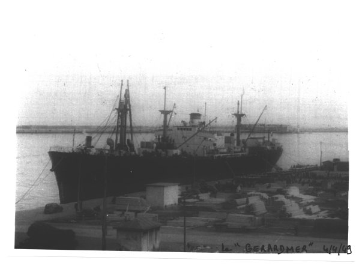
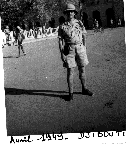
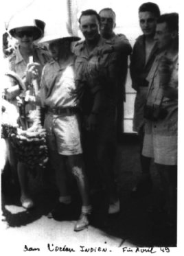
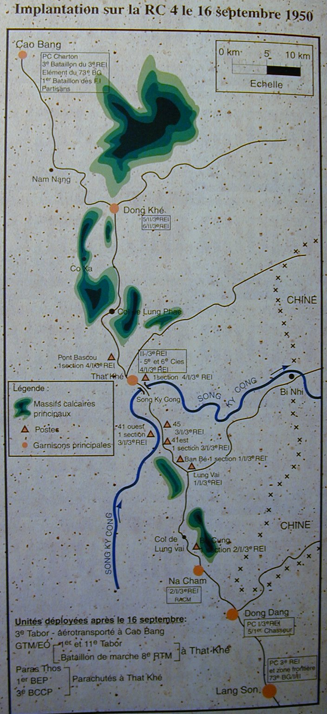
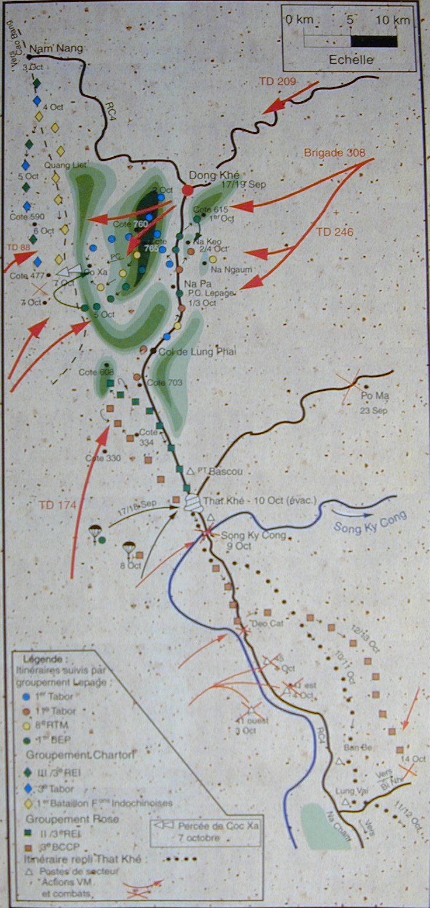
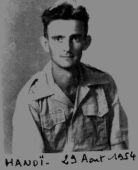
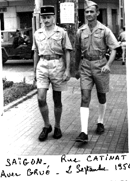
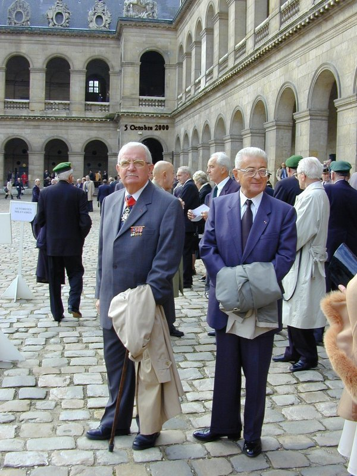
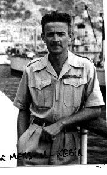
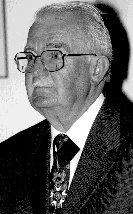

Version intégrale
Ma guerre d'Indochine
Colonel Jacques JAUBERT
Quelques mots d’introduction
Nous avions passé nos vingt ans dans les combats de la libération, de la Campagne de France et d’Allemagne. Beaucoup parmi nous avaient aussi connu la Tunisie, l’Italie, la Corse et le débarquement en Provence.
En janvier 1946, nous nous sommes retrouvés dans la grisaille bretonne de l’École de COËTQUIDAN, et très rapidement, alors que nous arrivions d’horizons si divers, une grande camaraderie s’est créée entre nous.
Cette période d’École et ses apprentissages variés nous est apparue longue et pesante, malgré le rythme plus que soutenu des diverses activités. Nous savions que la 2ème DB et la 9ème Division d’Infanterie Coloniale étaient parties en INDOCHINE, pour y rétablir notre présence, et qu’au delà des problèmes créés par les Japonais, les Chinois, les Anglais et les Américains, il y avait des « rebelles » qui s’opposaient à nos troupes.
Les tergiversations politiques ont duré toute l’année 1946. HO CHI MINH est venu à Paris, et le 18 Juin 1946, lors du grand défilé militaire auquel l’École participait, nous avons pu apercevoir sa frêle silhouette, à la tribune officielle, aux côtés du Président de la République…
Cette INDOCHINE, si lointaine, si mystérieuse, s’est rapidement imposée à nous, par tous les souvenirs des combats héroïques de la « conquête coloniale », et nous sentions confusément que, nous aussi, nous aurions un rôle à y jouer.
Aussi lorsqu’il a fallu choisir et proposer au Commandement un nom de baptême pour notre promotion, nous avons très rapidement proposé « INDOCHINE FRANCAISE », ramené au seul nom « INDOCHINE » par la prudente sagesse du ministère.
C’est ainsi, que dès la sortie des Écoles d’Application des Armes, les camarades ont commencé début 1948 à embarquer pour « l’INDO ». Certains y feront jusqu’à… « 3 séjours » ( !), et une centaine d’entre eux y perdra la vie au combat ou d’épuisement dans les camps VIETS.
Mais toutes ces épreuves, nous ne les connaissions pas, nous ne pouvions même pas les imaginer, et quand bien même nous l’aurions su ou imaginé, cela ne nous aurait pas empêché « d’y aller »…
Le départ
Le 4 avril 1949, j’embarque à MERS-EL-KEBIR sur un liberty ship le "GERARDMER". Ce type de bateau construit en très grande série pendant la guerre par les américains était essentiellement conçu pour le transport des marchandises et matériels de toutes sortes nécessaires à la guerre. Pour transporter 800 tirailleurs, c’est une autre affaire. Mais nous adorons bricoler… Des couchettes en bois, superposées ont été installées dans les cales, avec des tables et des bancs au centre. Pour les officiers, nous avons en plus, des cloisons en planches qui délimitent des "cabines" pour quatre. La nourriture est à peine passable. Quant à la climatisation ! !…tandis que les sanitaires sont vraiment sommaires.

Nous partons néanmoins dans cet équipage vers HAÏPHONG que nous atteindrons après 33 jours de mer… Pendant la durée du voyage, il n’y a qu’une escale prévue à DJIBOUTI. Nous apercevons donc PORT SAÏD, pendant l’arrêt obligatoire en rade lors du regroupement du convoi "descendant" pour franchir le canal et croiser le convoi "montant" dans le grand lac. Pendant cette halte à PORT SAÏD, le bateau est environné par une nuée de barques égyptiennes multicolores, pour venir nous proposer toute une bimbeloterie pour touristes (encore très peu nombreux à cette époque) et l’inévitable poudre de mouches cantharides aux vertus supposées aphrodisiaques. C’est bien le moment…
Le franchissement du canal, au milieu d’un désert de sable avec ses palmiers et quelques chameaux réglementaires, est très surprenant et intéressant. En arrivant dans le Grand Lac, nous longeons ISMAÏLA, véritable oasis de verdure avec de belles villas destinées aux techniciens et spécialistes étrangers, surtout français, participant au fonctionnement et à l’entretien du canal. Nous apercevons de longues plages avec des gens qui se baignent. Dès que nous sommes repérés, de nombreux canots à moteur viennent nous saluer et nous encourager.
Après le port de SUEZ, nous entrons dans la Mer ROUGE et nous commençons à avoir très chaud dans le bateau. Aussi nous restons sur le pont la plus grande partie de la nuit pour avoir un peu de fraîcheur. À DJIBOUTI nous faisons l’escale de ravitaillement prévue, et bien sûr nous sommes très heureux d’aller passer un moment à terre. Mais il est 13H, il fait chaud, donc toute la ville fait la sieste, et tout est fermé, même les bistrots. Nous n’avons pas l’air très malin et nous errons comme des âmes en peine, car il n’y a rien à voir, jusqu’à 16H où la ville se réveille enfin. Mais le temps a passé et nous avons juste le temps d’aller boire une bière fraîche au café traditionnel "Le palmier en zinc", et il faut rembarquer.

Dès que nous sommes dans l’Océan INDIEN, nous sommes environnés par une multitude de poissons volants, tandis qu’au loin nous apercevons des cachalots avec leur geyser.
Le voyage se poursuit, monotone et sans beaucoup d’occupations. Nous n’avons pas de matériel, pas d’armes, pas de poste radio, aucun équipement, et il est difficile de donner un peu d’activités militaires aux tirailleurs, qui jouent aux cartes, à longueur de journée, ce qui n’est pas ce qu’il y a de mieux pour eux. Nous faisons une nouvelle halte, non prévue, en rade de COLOMBO dans l’île de CEYLAN, pour débarquer un tirailleur gravement malade, qui sera récupéré le lendemain par le "PASTEUR" qui rentre en FRANCE. Ce bateau était parti de MERS-EL-KEBIR la veille de notre départ. Il a eu le temps d’aller à SAÏGON (plutôt au CAP St JACQUES), de débarquer ses 4000 hommes, d’en reprendre autant et d’être déjà à CEYLAN sur le chemin du retour. Le Pasteur était très rapide et les conditions de confort bien meilleures que ce que nous avions. Effectivement nous croisons le "PASTEUR" en mer le lendemain et il vient au plus près nous saluer à grands coups de sirène.

Nous passons devant SINGAPOUR sans nous arrêter mais par contre nous faisons une nouvelle halte non prévue au CAP St JACQUES, pour débarquer une infirmière, épouse d’un camarade de promotion, qui rejoignant son mari, et son poste, avait raté son rembarquement sur le "PASTEUR" à l’escale de MERS-EL-KEBIR. Elle avait donc voyagé avec nous, mais il n’était pas prévu d’avoir une femme à bord et cela a posé quelques petits problèmes de cohabitations. Finalement elle a été installée à l’infirmerie.
Nous reprenons la mer, pour remonter vers HAÏPHONG, en mer de CHINE, en longeant les côtes d’INDOCHINE. Nous croisons de grosses tortues de mer assez impressionnantes et nous accostons enfin à HAÏPHONG le 7 mai 1949.
L’Indochine
L’Indochine est maintenant là devant nous, ce pays qui a tellement occupé nos pensées depuis près de deux ans. Nous n’en avons pas rêvé, mais nous nous sommes posés beaucoup de questions sur ces combats qui avaient lieu et qui semblaient présager une guerre qui ne voulait pas dire son nom. Il y avait tellement d’intérêts politiques, économiques, stratégiques et surtout idéologiques, car maintenant nous étions face au communisme, au moment où la guerre froide commençait à heurter tous les esprits.
À HAÏPHONG, c’est une certaine surprise. Pas question d’aller se dégourdir les jambes en ville. Sur les quais, devant le bateau, au milieu d’une nuée de femmes d’aspect assez misérable, tout le matériel nous attend : armement, véhicules, moyens de transmission, compléments d’habillement et d’équipements, etc…
Les sections passent les unes après les autres pour percevoir ce qui leur revient. Mais depuis le départ du MAROC, les tirailleurs sont maintenant en piteux état : toutes les chaussures égyptiennes ont perdu leurs talons, et les casques coloniaux ont de leur côté perdu leur bordure-visière, les transformant en simple calotte… ce qui ne fait pas très sérieux. Comme les chapeaux de brousse ne sont pas encore distribués par l’Intendance nous garderons pendant quelque temps le chèche même en opération. Pour les officiers, afin qu’ils ne soient pas trop facilement repérés par les tireurs isolés, nous porterons aussi le chèche à chaque sortie. Mon ordonnance me "coiffera" ainsi chaque matin, car la forme du chèche chez les marocains est très particulière.
Pendant que nous percevons le matériel et que nous nous équipons, un certain nombre de péniches de la ROYALE, viennent à quai pour nous attendre. On ne nous laisse vraiment pas souffler. Dès que nous sommes prêts, nous embarquons. Les tirailleurs sont un peu gênés par l’armement perçu : les grands fusils anglais 303, avec de longues baïonnettes, le coupe-coupe (qui sera bien utile), les fusils mitrailleurs BREN, etc… Toutes ces armes leur sont parfaitement inconnues et nous n’aurons que très peu de temps pour les instruire.
L’embarquement terminé, y compris des véhicules, nous sommes serrés comme des sardines dans un bel inconfort, et nous partons vers le nord en traversant la baie d’ALONG, effectivement très belle et qui est devenue maintenant un boulevard à touristes.
De toute façon nous n’avons pas tellement l’esprit tourné vers le tourisme, et nous aimerions bien savoir où nous allons ainsi. Dans la nuit nous recevons un bel orage (sans doute le baptême d’accueil) et au matin nous débarquons sur la plage de POINTE PAGODE au sud de TIEN YEN, au début de la Route Coloniale n°4 (la RC4) qui fera parler d’elle et nous coûtera cher dans quelques mois.
Les compagnies rejoignent les emplacements prévus, une à MONCAY, plein Est à la frontière chinoise, une au centre à BINH LIEU, une autre au Nord-Ouest sur la R.C.4 à DINH LAP, et nous avec le P.C. près de TIEN YEN.
Ma section occupe un petit Manchon, fortifié par les japonais où il reste quelques blockhaus en béton. J’en utilise un comme "logement", avec une apparence de fraîcheur dans la journée, et une chaleur étouffante la nuit. En outre il y a un grand nombre de rats qui courent tout autour sur la bordure de mon lit de camp, mais ne franchissent pas la moustiquaire soigneusement bordée… Finalement je n’aurai aucun problème avec ces bestioles.

Le lendemain, le Colonel de la Coloniale commandant le secteur, nous réunit pour nous indiquer notre mission : tous les matins, partir sur la RC4 sur une quinzaine de kilomètres, vérifier sur 200 mètres à droite et à gauche de la route qu’il n’y a pas de préparatifs d’embuscade, et rester sur place pour permettre le passage des convois. C’est ce qu’on appelle une "ouverture de route". Pour faciliter ce travail peu passionnant nous débroussaillons la forêt à grands coups de coupe-coupe afin que les viets ne puissent pas s’y dissimuler.
Enfin le Colonel, termine son exposé en nous disant "Faites vachement attention…" ce dernier conseil nous a laissé un arrière goût bizarre.
Au cours de l’une de ces journées, un tirailleur est persuadé d’avoir vu un viet se promener avec son fusil à 300 ou 400 m dans la montagne (les marocains ont une vue extraordinairement perçante) sans hésiter ni en rendre compte, il cale bien son fusil sur une branche d’arbre, règle sa hausse, tire et touche le viet qui malheureusement s’avérera être un de nos partisans d’une tribu montagnarde. Évidemment, ce premier coup de feu peu "glorieux" a fait toute une histoire bien compréhensible avec la tribu du blessé, qui n’a d’ailleurs pas survécu. Dans ces cas là, même un mauvais tireur, ne rate jamais son coup.
Après quelques semaines, entre-coupées de petites opérations dans la région, nous commençons à remonter la RC4 vers LANG SON, où le Bataillon va se regrouper. Nous partirons ensuite en convoi par THAT KE et DONG KHE jusqu’à CAO BANG. Les 130 km de route représentent un long et lent déplacement particulièrement angoissant, car nous traversons toute la zone frontière où les viets lancent des attaques très violentes et très meurtrières contre les convois de camions qui serpentent sur ces routes enserrées entre falaises et forêts.
Le passage le plus délicat est celui du col de LUNG PHAÏ entre THAT KHE et DONG KHE. Un convoi précédent y a laissé 40 camions brûlés et pas mal de tués, les blessés étant achevés au coupe-coupe. Aussi pendant que nous grimpons la côte, chacun scrute les bas côtés de la route, le doigt sur la détente. Après plusieurs attaques qui nous ont coûté cher dans ce secteur, on lancera les camions par "rafales" de 5 véhicules toutes les 10 minutes, pour essayer de limiter les dégâts. Puis les convois seront définitivement supprimés fin Octobre 1949, et ce sera le règne du parachutage.
Nous passons heureusement sans encombre et nous arrivons enfin à CAO BANG, qui nous fait l’effet d’une petite ville d’une certaine importance, avec la masse imposante de sa citadelle, datant de l’époque coloniale.
Nous effectuons quelques petites opérations d’accoutumance avec le 3ème Régiment Étranger d’Infanterie, qui occupe CAO BANG avec un bataillon, et nous partons pour une mission plus importante. Il faut rejoindre (à pied) BAC KAN à 120 km au Sud-Ouest, par la RC3 bis pour protéger le repli d’un autre bataillon du 3ème Étranger, dont tous les postes sont installés le long de la route. Tout cet axe est donc abandonné aux viets.
Nous arrivons sans gros ennuis à BAC KAN, et je suis chargé, avec ma section, de tenir l’entrée Sud de la bourgade, pendant que les légionnaires embarquent tous leurs matériels sur les camions.
J’occupe un petit mamelon où il y a pas mal de broussailles et au sommet duquel il y a les ruines d’une pagode, avec de grosses colonnes de bois. Bien sûr, dès que la nuit tombe, les viets qui avaient dû observer notre installation, viennent nous "tâter", et nous devons bagarrer toute la nuit. C’est au cours de cette nuit là, que m’étant placé debout, à l’abri derrière une colonne, pour mieux commander, des balles viets sont venues frapper la dite colonne. Je n’ai rien eu, mais le choc des balles a surtout dérangé un nid de guêpes, qui, pas contentes du tout, sont venues me piquer le sommet du crâne à 2 ou 3 endroits. Je garde un souvenir très douloureux de cette affaire. Mais cette nuit là me vaudra ma première citation en INDOCHINE (pas pour les guêpes…).
Au matin, pour décrocher, les viets étant toujours là, deux chars légers du 1er Chasseurs, viennent m’aider à quitter ce coin qui commençait à ne pas être très salubre.
Je retraverse BAC KAN dans l’autre sens, suivi par ma section et je passe à côté d’une pagode en flamme. Je vais jeter un coup d’œil à l’intérieur, et j’aperçois un petit vase que je trouve joli. Plutôt que de le laisser être détruit par l’incendie, je le récupère et le met dans mon sac enveloppé dans une chemise de rechange. Je le transporterai jusqu’à CAO BANG où je le calerai à l’intérieur d’un bambou pour l’envoyer à mes parents. Le petit vase est toujours dans ma bibliothèque, et j’y tiens beaucoup.
Après cette opération qui a duré une douzaine de jours assez durs nous apprécions un peu de repos avant de repartir dans la région de NGUYEN BINH pour évacuer d’autres postes et surtout pour désarmer et abandonner des tribus de montagnards, en particulier des MANS, qui nous faisaient confiance pour lutter contre les viets. Nous les avons livrés désespérés et sans défense aux viets qui les ont massacrés. Nous étions horrifiés d’accomplir de tels actes, d’être les instruments de telles lâchetés. Mais il y en aura bien d’autres, non seulement en INDOCHINE, mais aussi au MAROC et surtout par la suite en ALGERIE avec les harkis. Ces évacuations de postes, ces abandons de populations, correspondaient certes à un plan de restructuration préétabli au plus haut niveau, mais pour nos tirailleurs c’était mauvais pour leur moral et ils commençaient à se poser des questions…
À la fin de l’été, après avoir participé au repli sur CAO BANG de tous les postes installés dans les environs, nous apprenons que toutes les unités (Légion, Tirailleurs Algériens, blindés, etc…) vont partir pour LANG SON. Seul notre bataillon va rester dans la région à CAO BANG et à DONG KHE avec deux compagnies dans chaque poste.

Ma compagnie, avec la 3ème compagnie part pour DONG KHE, relever la légion. Pour ma part je suis "gâté" une fois de plus, et désigné pour aller occuper avec ma section, le petit poste du col de LOUNG PHAÏ entre DONG KHE et THAT KHE, dans un endroit de sinistre mémoire.
Je vais m’installer avec mes fidèles tirailleurs dans un petit poste en rondins, dont les défenses extérieures sont des bambous pointus enfouis dans le sol. J’ai un mois de vivres, un poste radio (qui tombera en panne le lendemain de notre arrivée) et un mortier de 81. Je suis dans un décor certainement très beau mais sinistre et impressionnant pour y faire la guerre. J’ai de l’autre côté de la route d’immenses falaises, et je suis entouré de forêts épaisses, pleines de singes qui, la nuit, viennent dans les cuisines (installées à l’extérieur du poste) pour voler tout ce qu’ils peuvent en se chamaillant.
Je suis donc seul, sans radio et sans aucune possibilité de liaison. Comme il faut au moins trois bataillons pour ouvrir et tenir les 15 km de route pour venir jusqu’à moi, ce n’est pas demain la veille que je verrai des troupes amies. Si les viets veulent m’attaquer, avec leurs méthodes habituelles, mon poste tiendra au maximum une demi-heure et puis nous disparaîtrons en fumée… Ce n’est pas très enthousiasmant, mais nous ne sommes pas ici pour pleurnicher sur notre sort. Il faut faire avec ce que nous avons, et faire au mieux en vivant en circuit fermé. Patrouille dans les environs, travaux d’amélioration des défenses du poste (je m’inspire de mes souvenirs du livre de Jules César "De bello Gallico" et des dessins qu’il contient sur les défenses gauloises à ALESIA…). Nous allons aussi visiter et amadouer un minuscule village MAN où je soignerai les goitres, très fréquents dans cette région en leur faisant boire de l’eau additionnée de teinture d’iode. Ils s’y habitueront vite et viendront au poste tous les matins chercher leur boisson favorite.
Une nuit, un de mes sous-officiers marocains vient me prévenir qu’un tirailleur est en train de mourir ( !). Je vais voir. Ses copains l’ont déjà allongé sur le côté, vers la Mecque et récitent des prières. Effectivement, il n’a pas l’air en très bon état. Sans radio, pour avoir les conseils d’un toubib, il faut que je me débrouille, ou que je me prépare à l’enterrer…
J’ai une caisse de médicaments, qui m’a été donnée pour mon installation ici. Je l’ouvre et horreur ! ce sont des médicaments de l’armée japonaise sans aucune traduction… Je repère des ampoules avec un liquide vert, je pense que ce doit être de l’huile camphrée excellente pour le cœur, du moins je le suppose. Je remplis une seringue, un bon coup dans les fesses et je vais me recoucher tandis que les tirailleurs continuent de prier pour leur copain.
Le lendemain, à mon grand étonnement, tous les tirailleurs arborent un grand sourire, et je vois mon mourant frais comme un gardon… Je n’ai jamais su ce qu’il a exactement eu, mais je suis devenu un grand chef…
Enfin, un jour, le 5 novembre cela fait près d’un mois et demi que je suis ici complètement isolé, avec des vivres qui commencent à se raréfier, quand je dénote une certaine activité aérienne inhabituelle. J’aperçois, aux jumelles, venant de THAT KHE, les colonnes d’infanterie qui abordent la longue montée vers le col de LUNG PHAÏ. Au milieu des colonnes à pied, quelques blindés et des GMC bricolés, sur lesquels ont été montés des canons automatiques antiaériens BOFORS de 40 mm, qui lâchent des rafales d’obus " a priori " sur les falaises. Rien n’y fait, car les viets sont là, leurs armes, mitrailleuses et mortiers se dévoilent et tout est bloqué.
Le terrain est vraiment difficile. La route est au flanc d’un long mouvement de terrain de 4 à 5 km sur lequel tout en haut, à l’extrémité est mon poste. Sous la route, le ravin est très profond avec une végétation extrêmement dense. C’est dans ce ravin que se cachaient les vagues d’assaut viets pour attaquer à la grenade et au coupe-coupe les convois bloqués. De l’autre côté du ravin s’élèvent les falaises impressionnantes où sont retranchés les viets.
Donc, en bas, chacun a le nez dans la poussière, et moi qui suis " au balcon " je ne peux rien faire sans radio et avec un mortier hors de portée des falaises.
Un MORANE d’observation, particulièrement courageux ou inconscient, remonte le long de la vallée à l’altitude de mon poste et… des falaises. Il n’atteindra pas le col. Tiré comme un lapin, je le vois balancer ses ailes à droite puis à gauche et tomber comme une pierre au fond du ravin.
Les viets hurlent de joie. Pas pour longtemps. Dans les unités qui montent vers le col, il y a tout un Thabor de Goumiers marocains. Un certain nombre d’entre eux avec l’Adjudant-Chef L… vont attaquer à leur manière en s’infiltrant dans la falaise et en grimpant de façon acrobatique. Arrivés sur la crête, c’est la ruée sur les viets ahuris et un joyeux massacre, comme les allemands y avaient goûté en ITALIE et en PROVENCE pendant la guerre. Un tir d’artillerie de 105, bien réglée parachève l’affaire et la voie est libre. Les unités peuvent occuper les abords de la route et le convoi peut passer vers DONG KHE.
Sur la route, que j’aperçois au pied de mon poste il y a une agitation bien inhabituelle pour moi, et ce n’est pas désagréable à regarder. Je vois arriver mon Commandant de compagnie, le Capitaine CASANOVA, qui vient m’annoncer que mon poste est abandonné et que je rentre à DONG KHE.
Nous ne traînons pas pour réunir tout le matériel, munitions, etc… et mettre quelques charges d’explosifs pour détruire le poste et je suis prêt, sans aucun regret à descendre sur la route pour embarquer sur les camions.
Je prends avec moi, le drapeau qui flottait sur le poste, bien délavé et déchiré. Je l’ai offert en 1988 au Musée de l’Infanterie à Montpellier, où il est exposé.
DONG KHE est une bourgade à une dizaine de kilomètres de la CHINE, au carrefour d’une route y conduisant avec la RC4 qui, elle, longe la frontière. Il y a bien une citadelle de l’époque coloniale, moins imposante qu’à CAO BANG, mais bien utile. Nous sommes tout de même dans une cuvette, entourée de calcaires menaçants où il y aura juste assez la place d’installer une petite piste d’atterrissage pour le MORANE d’évacuation des blessés (mais aussi du courrier, car si nous le recevons assez rapidement grâce aux parachutages, le courrier au départ est plus aléatoire…).
Puisqu’il n’y a plus de convois, nécessitant trop de monde pour leur protection, nous nous habituons aux parachutages journaliers de 2 ou 3 avions. Tout ce qui n’est pas fragile (vêtements, rouleaux de barbelés, tabac, sac de riz, etc…) est largué sans parachute au plus près du sol. Tout le reste est parachuté, et il sera même utilisé des parachutes en papier ( !). Les moutons pour les fêtes musulmanes seront parachutés vivants, de même que les cochons pour les partisans, ainsi que les canards et les poulets dans des paniers empilés les uns sur les autres. Les parachutes en tissu sont évidemment récupérés, roulés et stockés en attendant un hypothétique convoi (ils brûleront tous lors de l’attaque de Mai 50). La garnison de DONG KHE est composée de 2 compagnies de tirailleurs marocains, d’une petite compagnie de partisans et de 2 canons de 105. Le tout est aux ordres du Capitaine CASANOVA, un officier vif, dynamique et attachant que j’apprécie beaucoup.

Ma compagnie occupe la citadelle avec les artilleurs, sauf ma section qui occupe le " Point d’Appui Sud " au débouché de la route venant de THAT KHE. Ce point d’appui comporte une maison en dur où je m’installerai avec un groupe, puis en allant vers le Sud-Ouest sur un petit mamelon dit du " Pagodon " un second groupe dans un blockhaus, et enfin toujours vers le Sud-Ouest le 3ème groupe au sommet d’un piton en pain de sucre dans un petit poste que nous construisons à grands coups d’explosifs. Ce dernier petit poste a une excellente vue sur la route de THAT KHE, et c’est à nous qu’il va donner du fil à retordre en Septembre 50.
La population civile est assez réduite, 200 à 300 personnes, avec une importante communauté chinoise et l’inévitable maison de jeu.
Les journées passent en travaux d’aménagements des défenses et il y a beaucoup à faire. Nous ne recevons que très peu de ciment pour bétonner, aussi nous construisons beaucoup à la chaux et au sable ce qui ne présentera pas la même résistance que le béton aux obus. Mais pour faire de la chaux il faut des pierres de calcaire (il y en a à revendre) et du bois pour faire fonctionner des fours à chaux. Nous récupérons tout le bois disponible sur les maisons des villages des environs abandonnées, et je suis désigné " spécialistes des explosifs " pour abattre et débiter tous les arbres énormes que nous trouvons dans la cuvette.
Il y a tout de même une bonne activité militaire avec des patrouilles aussi profondes que possible, ainsi que des embuscades. Au cours de l’une d’entre elles, une superbe colonne viet s’engage sans s’en rendre compte dans le piège en V, tendu par ma section. Malheureusement, un tirailleur ouvre le feu trop tôt sans attendre mon signal. Nous ne pouvons récupérer que 3 viets.
Nous avons une popote sympathique pour notre petit groupe d’officiers, où le jeu " apéritif " journalier consiste à vider plusieurs chargeurs de pistolet sur des boîtes de conserve. Nous ferons ainsi beaucoup de progrès en tir instinctif.

Lnt de VALS (partisans), Lnt ASSID (3ème Cie) En janvier 1950, nous apprenons que l’armée communiste chinoise arrive à la frontière en repoussant devant elle une armée nationaliste de TCHANG KAÏ CHEK, qui va entrer au TONKIN en affirmant vouloir continuer le combat à nos côtés.
Effectivement, un beau matin les sentinelles n’en croient pas leurs yeux. Une nuée de chinois arrive devant DONG KHE. Une délégation chinoise vient nous demander, en anglais, le libre passage. Nous nous réfugions derrière les instructions que nous demandons à HANOÏ par radio. Les ordres sont " clairs " : interdire, s’il le faut par les armes, le passage des chinois et les refouler en CHINE…
Une fois de plus l’État-Major donne un ordre idiot et irréalisable. Il y a 8000 chinois devant nous, très bien équipé avec de l’artillerie et nous sommes 300…
Toujours par radio, nous essayons de faire comprendre le problème au Commandement à HANOÏ. Pendant ce temps, nous invitons le Général chinois VU HONG KHAN à déjeuner à la popote. Il arrive avec une centaine de gardes du corps sur-armés, qui encerclent la popote pendant tout le repas qui se passe très bien. Le Général chinois très satisfait de l’accueil offre un beau parabellum à notre Capitaine.
Heureusement, HANOÏ a tout de même modifié ses ordres " laissez passer les chinois, en les dirigeant sur THAT KHE, où les renforts sont envoyés pour les désarmer, mais au passage comptez les hommes, les armes automatiques, les camions, etc… "
La colonne chinoise commence à défiler, nous sommes vite débordés dans nos essais de comptage, et les tirailleurs ravis font du troc avec les soldats chinois pour récupérer leurs grosses pièces de monnaie en argent à l’effigie de Maximilien d’Autriche, Empereur (éphémère) du Mexique par la grâce de Napoléon III. L’histoire est parfois curieuse…
Quant à nos chinois, ils arriveront sans encombre à THAT KHE où après pas mal de péripéties, ils finiront par être encerclés avant LANG SON, désarmés, regroupés et finalement expédiés à TAÏWAN.
Mais maintenant nos voisins sont les chinois de MAO copains des viets et nous allons très rapidement en subir les conséquences.
En Janvier 1950, comme prévu, je suis nommé Lieutenant, mais de toutes façons c’est le seul grade de l’armée française automatique que l’on obtient après deux ans d’ancienneté comme sous-Lieutenant.
Un matin de mai 1950, le 25, à 7H au moment du rassemblement pour la répartition du travail, nous recevons une bordée d’obus qui tombent sur la citadelle et le village.
Chacun rejoint son emplacement de combat, et nous apercevons bien dans les calcaires les départs des coups de canon, car les viets à cette époque ne savent tirer qu’à vue. La radio alerte le commandement et on nous envoie l’aviation. Mais le plafond est très bas, le temps est gris et brumeux. Un pilote casse-cou, que nous connaissons bien, le Commandant BOUDIER, pique dans la brume, passe au-dessus de la citadelle en rase-mottes en battant des ailes et redisparait dans les nuages. Quand la brume se lèvera les chasseurs reviendront, mais nous n’avons aucune liaison radio sol-air. On tire des obus fumigènes sur les objectifs pour les indiquer aux pilotes. Ils font ce qu’ils peuvent, quelques passages à la mitrailleuse, mais en fait ils ne nous sont pas d’un grand recours, d’autant plus que les viets cessent le tir quand les avions sont là, et le reprennent dès qu’ils tournent le dos.
Nous recevons toujours autant d’obus sur la figure. Une partie de la citadelle et les paillotes du village brûlent. Nos deux canons de 105 sont touchés et ne peuvent tirer. Le Capitaine CASANOVA est tué, ainsi que mon adjoint, le Sergent-Chef REMOND. La maison que j’occupais reçoit des obus sur le toit, ce qui fait un joli feu d’artifice avec les tuiles. Heureusement que nous sommes dans les tranchées creusées tout autour. La nuit se passe avec quelques attaques viet au Nord, mais sans gravité. Le lendemain, nous apprenons qu’un Thabor marocain quitte THAT KHE pour venir jusqu’à nous (il a 30 km à faire dans un terrain épouvantable et mettra plusieurs jours), et qu’un bataillon de parachutistes est en alerte à HANOÏ.
Toute la journée se passe avec les tirs d’artillerie et de mortier et des assauts en fin de journée qui sont repoussés.
Mais à la nuit tombée, le Capitaine B… qui avait pris le commandement pour remplacer le Capitaine CASANOVA, prend la plus mauvaise décision qu’il pouvait choisir et en tout cas indigne d’un chef responsable. Jamais, j’en suis intimement convaincu le Capitaine CASANOVA n’aurait agi de la sorte.
Obnubilé par la colonne de goumiers partie de THAT KHE pour nous " secourir ", B… décide d’aller à leur rencontre et d’abandonner DONG KHE. C’est un véritable abandon de poste devant l’ennemi ! Il n’y avait pourtant qu’une seule chose à faire : Se regrouper tous dans la citadelle et ses abords immédiats et tenir toute la nuit. Nous étions encore assez nombreux pour résister, même avec un peu de casse. Dès le jour venu les paras auraient sauté sur le poste, et nous n’aurions pas perdu la face.
Au lieu de cela, c’est l’évacuation précipitée qui est ordonnée, et dans ce cas là nos tirailleurs ne sont pas très bons et ont tendance à une certaine agitation qui peut facilement engendrer la panique et la déroute.
Les unités plus ou moins constituées passent par mon point d’appui pour prendre la route de THAT KHE. On me prie de suivre le mouvement mais je refuse net. J’ai un groupe au sommet du Piton Sud, je vais d’abord aller le chercher et non pas l’abandonner.
Avec mes autres tirailleurs nous grimpons au sommet du Piton où mon Sergent SEGHIR, ne fait que répéter " comme à CASSINO, mon Lieutenant, comme à CASSINO !… " Il y avait été blessé, et exagérait un petit peu. Mais ça tombait tout de même pas mal. Ayant regroupé ma section, je redescends et arrivé sur la route, il n’y a plus personne. Tout le monde a filé. Seul le village continue de brûler et éclaire sinistrement la citadelle, tandis que l’on entend les viets crier de joie, sans doute un peu surpris d’une victoire aussi facile.
Je décide alors de remonter sur mon Piton et d’aller me planquer dans les fourrés à mi-pente. Si nous sommes attaqués, nous nous défendrons, sinon nous attendrons. Je ne sais pas trop quoi d’ailleurs. Les tirailleurs n’en mènent pas large, mais je suis avec eux, ils ont confiance en moi et moi en eux.
Le jour arrive, nous sommes coincés dans notre broussaille d’autant que les viets sont partout pour piller tout ce qu’ils peuvent récupérer.
Si rien ne se passe dans la journée, nous tenterons de partir vers THAT KHE la nuit prochaine, mais cette éventualité est pleine d’embûches et d’incertitudes. D’ailleurs la plupart de ceux qui sont partis avec le Capitaine B…, ont été tués ou fait prisonniers. Une petite dizaine a pu passer.
La journée est longue, sans manger, sans boire, sans fumer, sans tousser et faire le moindre bruit. Les viets passent plusieurs fois à quelques mètres, sans se douter qu’une section de tirailleurs est là.
Vers le milieu de l’après-midi, les avions de chasse reviennent et commencent à mitrailler tout ce qui bouge sur la citadelle et aux environs. Nous recevons quelques douilles mais pas de balles…
Dès que les chasseurs arrêtent le tir, nous entendons le bruit caractéristique de nombreux avions de transport (en fait plus de 30 JU 52 et DAKOTA) et c’est le parachutage du 3ème Bataillon Colonial de Commandos parachutistes. Si nous n’avions pas évacué DONG KHE aussi précipitamment, il était prévu de les faire sauter dans la matinée. Apprenant la décision du Capitaine B…, il y a eu un certain flottement à HANOÏ et le saut a été reporté dans l’après-midi pour reprendre le poste.
C’est un moment de joie intense pour nous. Nous entendons les tirs de quelques combats, mais pour moi, avant de rejoindre les paras, il vaut mieux prendre quelques précautions pour que nous ne soyons pas confondus avec les viets. Je fais attacher un chèche au bout d’un fusil et nous sortons de nos broussailles colonne par un. Je suis en tête avec mon tirailleur qui agite frénétiquement son fusil-drapeau et nous rencontrons enfin un groupe de paras un peu ahuris.
Ils pensent que nous sommes les goumiers qui arrivent de THAT KHE, mais ils mettront encore deux ou trois jours avant de nous rejoindre. Je suis tout de suite dirigé vers le Colonel GRAAL qui commande l’opération. Je lui raconte mes aventures et il me donne le commandement du 8ème RTM, qui s’est grossi, outre ma section de quelques individuels. Je suis bien sûr chargé d’organiser ces rescapés pour en faire une petite unité militaire présentable, mais également de régler les problèmes d’organisation et de ravitaillement. Une tâche pénible dont je suis chargé est de rassembler les corps des tués, d’essayer de les identifier et de les enterrer au pied du piton Nord, où très vraisemblablement ils sont toujours.
Nous apprenons que la colonne de goumiers qui venait à notre secours est bloquée à quelques kilomètres de DONG KHE et qu’ils ont besoin de ravitaillement en vivres. J’organise donc une colonne de ravitaillement et ce sont les " assiégés " qui vont au secours de leurs " sauveurs "…
Enfin, les goumiers arrivent à DONG KHE, commandés par le Colonel LEPAGE (dont on reparlera) avec comme adjoint le Commandant LABATAILLE, un colosse du Sud-Ouest à la voix rocailleuse et la moustache conquérante, avec lequel je sympathise. Malheureusement, il sera tué quelques semaines plus tard.
J’apprends ainsi la quasi disparition des éléments des deux compagnies qui sont partis avec le Capitaine B…. Quel gâchis en vies humaines et quelle humiliation aussi, car dans quelques jours lorsque je redescendrai à THAT KHE, un Général refusera de me serrer la main car dans l’esprit du commandement le 8ème RTM a failli à son devoir. De même aucune citation ne sera accordée, et ce sera difficile de l’expliquer aux tirailleurs. C’est dur de subir ainsi la conséquence de l’incompétence et de la couardise d’un " chef ". BRUN avait été fait prisonnier avec quelques autres qui sont morts. Quand il nous a rejoint au camp n° 1 je l’ai ignoré ainsi qu’après la libération. De son côté, il n’a jamais cherché à me revoir en face…
Cela fait maintenant beaucoup de monde à DONG KHE. Les patrouilles envoyées dans les environs récupèrent nos véhicules et nos deux canons, déjà démontés…. Pour ma part, toutes mes affaires ont été pillées, et je me retrouve avec ce que j’ai sur le dos et une cantine vide…
Un convoi de camions arrive jusqu’à DONG KHE, avec du matériel. Il embarque pour le retour les paras du 3ème BCCP et mon détachement de survivants. Le Thabor va rester sur place, pour remettre en état et développer les défenses.
Après une bonne nuit de repos à THAT KHE où je retrouve des copains de promo, en particulier BOUDIER, j’arrive à LANG SON. J’y retrouve la base arrière du bataillon et des renforts de tirailleurs pour compenser les pertes, ainsi que le Capitaine GUIDON pour remplacer le Capitaine CASANOVA.
Nous constituons une bonne compagnie, et en attendant le retour de CAO BANG du reste du 8ème RTM, nous sommes envoyés faire des opérations dans le massif du BAO DAÏ, près de LUC NAM, à 70 km au Sud-Ouest de LANG SON.
Nous y faisons quelques incursions payantes chez les viets et nous ramenons armes et documents divers. Dans un P.C. abandonné en pleine forêt, je récupère des liasses de timbres-poste viets que j’adresserai à mon père collectionneur. Je récupère aussi une belle décoration viet dans sa boîte, avec une photo de Staline, que je possède toujours. C’est dans ce secteur que j’aurai une seconde citation.
Je suis désigné, un beau jour, pour aller faire une mission auprès de l’État-Major à HANOÏ. Alors que je ne suis qu’à 60 km à vol d’oiseau d’HANOÏ, je mettrai deux jours pour y arriver en empruntant toutes sortes de moyens de communication.
Tout d’abord un premier déplacement à pied vers le P.C. du secteur. Puis je rejoins LUC NAM sur un petit cheval chinois, pas plus grand qu’un poney, mais très robuste, escorté par des partisans aux mines patibulaires. A LUC NAM, j’embarque sur un petit bateau de la marine pour descendre le fleuve par SEPT PAGODES jusqu’à HAÏ DUONG. Là, je passe la nuit au P.C. du secteur et le lendemain je pars en Jeep avec le convoi jusqu’à HANOÏ. La mission accomplie, je vais prendre un avion militaire et je me retrouve à LANG SON.

Entre temps le Bataillon est revenu de CAO BANG et nous sommes tout à la joie de nos retrouvailles après 8 mois de séparation et notre gros pépin de DONG KHE. Le bataillon se réorganise : nous percevons l’armement français plus commode et des tenues de combat décentes, pour remplacer les salopettes de jardinier que nous avions pendant l’hiver 1949.
Nous nous préparons pour la prise d’armes du 14 Juillet où je recevrai ma Croix de guerre avec ses deux " clous ". Après la prise d’armes nous sommes invités à un cocktail chez le Colonel Cdt la zone frontière. C’était le Colonel CONSTANS qui sera tristement célèbre quelques semaines plus tard, mais qui à LANG SON vivait comme un roitelet aux réceptions réputées, disposant de toute une cour de légionnaires (dont un Sergent-Chef, ex-ministre de VICHY…).
A notre arrivée, les légionnaires très stylés, nous servent des boissons glacées, qui sont les bienvenues car il fait une chaleur torride. Mais ces "rafraîchissements " s’avéreront de redoutables cocktails alcoolisés, et au bout de 3 ou 4 verres, nous sommes tous d’une humeur plus que joyeuse…
Nous partons dîner au Mess de garnison, et à la fin du repas, où nous sommes tous en parfaite forme, les assiettes commencent à voler par les fenêtres, vers le fleuve en contrebas, puis les verres, les bouteilles et carafes serviront de projectiles pour descendre toutes les bouteilles alignées derrière le bar. Les deux serveurs sont terrés sous le bar en attendant que le massacre s’arrête. Effectivement, comme il n’y a plus rien à casser, et que nous nous sommes bien défoulés, nous repartons, toujours en Jeeps, quelque peu zigzaguantes vers nos cantonnements.
Le lendemain, notre patron le Commandant ARNAUD, saint homme, très croyant, célibataire et très strict (mais qui la veille n’était pas le dernier à faire l’imbécile) nous réunit et nous lit la facture du Mess où le gérant a soigneusement chiffré le résultat de nos exploits. Chacun paye son écot pour une somme rondelette, mais nous sommes " riches " puisque cela fait plusieurs mois que nous ne dépensons rien, et surtout nous avions besoin de cette explosion pour exorciser quelques moments difficiles passés et peut-être à venir.
En effet nous ne savions pas ce que le destin nous réservait dans très peu de temps…
Le drame de la RC 4
L’été se poursuit en travaux divers : refaire une route emportée par une crue, patrouilles et reconnaissances dans les environs, instruction sur le nouvel armement, etc…

Ma compagnie reçoit un nouveau patron, un Lieutenant qui n’a jamais vu un tirailleur de près, et avec lequel je m’aperçois très vite que je n’ai pas beaucoup d’atomes crochus…Car sur les détails de la vie courante il a des prises de positions qui m’exaspèrent. Que sera-ce au combat ?… Par exemple, un jour où j’avais rédigé sur le " cahier d’ordres " les instructions pour un départ le lendemain matin pour une opération de deux jours, il me reprochera de ne pas avoir précisé exactement la composition du sac à dos et combien chacun devait emporter de chemises, chaussettes, etc… J’essaie de lui expliquer que les tirailleurs ont en moyenne 10 ans de service et qu’ils savent très bien ce qu’il y a à faire. Rien n’y fait, je " l’envoie sur les roses …" et je m’aperçois que je vais avoir des problèmes avec un tel patron, ayant l’esprit d’un petit fonctionnaire borné, timoré et vaniteux. Mes craintes seront justifiées quelques semaines plus tard.
Le 15 Septembre, nous apprenons avec stupeur que mon ancien poste de DONG KHE est à nouveau attaqué en force par les viets. À mon départ, après l’attaque de Mai, c’est le 8ème Thabor au complet (soit 4 Goums équivalent de 4 compagnies) qui nous avait remplacés. Ils ont effectué beaucoup de travaux de fortifications, grâce au ciment et aux barbelés qu’ils ont reçus en quantité. Fin Août, début Septembre, ce Thabor a été remplacé par deux compagnies du 3ème Étranger. Sans doute a-t-on considéré que deux compagnies de légionnaires, valaient largement quatre compagnies de marocains.
Quoi qu’il en soit, c’est l’alerte générale, une colonne est formée à LANG SON avec deux Thabors et le 8ème RTM, tandis qu’un troisième Thabor est expédié par avion à CAO BANG.
Contrairement à ce que nous pensons, il ne s’agit pas vraiment d’aller porter secours aux légionnaires de DONG KHE. De même, on ne veut pas non plus envoyer des parachutistes en renfort à DONG KHE, dans la crainte de voir leur largage sérieusement contré par les viets avec l’expérience du mois de Mai. Le 1er Bataillon Étranger de Parachutistes sautera finalement sur THAT KHE où il renforcera notre colonne. On laissera les légionnaires de DONG KHE disparaître après trois jours de résistance héroïque.
En fait, la constitution de notre colonne, et le renforcement de la garnison de CAO BANG, ne seront utilisés qu’à appliquer le plan d’évacuation totale de la zone frontière de CAO BANG jusqu’à LANG SON (mais ce but nous ne l’apprendrons que beaucoup plus tard). Pour cela, la garnison de CAO BANG (avec le Colonel CHARTON) doit filer vers le Sud, rejoindre DONG KHE, que notre colonne (avec le Colonel LEPAGE) aura probablement repris ( !).
Une très belle manœuvre d’État-Major qui a simplement omis de prendre sérieusement en compte tous les renseignements du 2ème Bureau, faisant état de tout le corps de bataille viet avec 30.000 hommes dans la région de DONG KHE, soutenu par les chinois.
Nous allons très rapidement nous apercevoir que nous allons entrer dans la gueule du loup.
Donc pour nous, un peu en camion et beaucoup à pied à marches forcées à partir de NACHAM nous arrivons à THAT KHE où vient d’être parachuté le 1er Bataillon Étranger de Parachutistes.
La colonne LEPAGE est maintenant au complet avec quatre bataillons, mais pas d’artillerie. Nous ne savons pas exactement ce que nous venons faire, puisque maintenant nous savons que DONG KHE est tombé, et à part une demi-douzaine de légionnaires qui arriveront jusqu’à THAT KHE, tout le reste de la garnison a été tué (180) ou fait prisonniers.
Nous faisons quelques opérations autour de THAT KHE, avec pas mal d’accrochages et nous sentons " qu’il y a du monde " en face. Enfin, le 1er Octobre à l’aube c’est le départ pour DONG KHE (30 km) qu’il faut reprendre…
Nous nous engageons colonne par un sur la RC4, dans la montée vers le col de LUNG PHAÏ. Nous avançons " en perroquet ". Chaque bataillon va occuper le plus rapidement possible une portion de route et ses abords, puis est dépassé par un second bataillon et ainsi de suite.
Les deux Thabors sont en tête de la colonne, nous sommes en 3ème position, puis les paras ferment la marche. Après le col de LUNG PHAÏ franchi sans incident, nous traverserons le sinistre " boulevard de la 73/2 ", une gorge étroite enserrée entre les rochers et la forêt, où une unité du Génie (la 2ème Cie du 73ème Régiment) a laissé beaucoup de " plumes " entre 1947 et 1949.
Quand c’est à notre tour de passer en tête, nous arrivons assez vite dans la petite cuvette de NA PA à 3 ou 4 km de DONG KHE.
Ma compagnie qui était en queue du bataillon se retrouve maintenant en tête par la marche " perroquet " qui fonctionne également à l’intérieur de chaque bataillon. Nous laissons passer les paras qui forcent l’allure. Si on peut arriver à DONG KHE par surprise, ce sera merveilleux, mais ce silence autour de nous est tout de même inquiétant.
1 km plus loin, les paras se trouvent nez à nez avec un détachement viet. Il y a échange de coups de feu et les premiers tués et blessés. Mais surtout l’alerte est donnée partout, et le petit poste que j’avais si bien construit en haut du piton Sud, ouvre le feu à son tour à la mitrailleuse.
Adieu l’effet de surprise ! Tout est bloqué et comble de malheur, une compagnie de mon bataillon qui tenait une hauteur à droite de la route est culbutée par une attaque viet aussi brutale que soudaine. Il y a donc beaucoup de viets de l’autre côté de la ligne de crête, ce qui nous sera confirmé par l’aviation qui emploiera le terme de " grouillement de viets " ça promet !…
Un Thabor est envoyé pour réoccuper la hauteur perdue, et pendant deux jours avec les goumiers puis avec les légionnaires envoyés en renfort, ce sera une bataille acharnée dite de NAO KÉO, au corps à corps, avec des vagues viets successives attaquant en hurlant sans se soucier des pertes effroyables qu’ils subissaient. Mais pour nous aussi le bilan sera lourd et bien des camarades sont morts là-haut et y sont toujours…
Pour ma part, je suis toujours en réserve sur la route et j’assiste au parachutage de deux canons de montagne, qui ne serviront pas à grand chose et qu’il faudra détruire moins de 48 heures après.
En fin de journée, je vois le Colonel LEPAGE qui vient vers moi, et s’installe assis dans le fossé à mes côtés. Il a l’air las et me dit " Mon vieux JAUBERT, qu’est-ce qu’il faut faire "…
C’est vraiment le genre de question à laquelle je ne m’attendais pas. Certes, il me connaissait depuis l’affaire de DONG KHE en Mai 1950, mais de là à lui donner un avis, alors que je n’étais que chef de section et simple exécutant, et que surtout j’ignorais la réalité de la mission qu’il avait reçue.
Devant mon étonnement, il m’explique : l’évacuation de CAO BANG, dont la garnison avec des centaines de civils forment la colonne CHARTON, qui se dirige vers DONG KHE, où nous devrions être installés pour les attendre et les recueillir.
Mais DONG KHE est maintenant imprenable, avec nos seuls moyens, alors que les viets sont tous rameutés sur nous et nous attaquent durement.
CHARTON ne pourra pas aller bien loin sur la R.C.4, HANOÏ lui dit d’emprunter une piste à l’Ouest de la R.C.4 qui rejoint THAT KHE. Cette piste est bien marquée sur la carte, mais dans la réalité ce n’est qu’un mauvais sentier. De toutes façons, il est obligé d’abandonner et de détruire tout son matériel lourd : véhicules, canons, etc…
Quant à nous, nous irons les attendre sur cette piste à hauteur de DONG KHE…
Le Colonel LEPAGE me paraît un peu perdu. Il me demande si je saurais aller au point de rendez-vous. Je réponds " oui " alors que mes souvenirs ne sont pas très précis, mais il faut partir plein Ouest sur environ 4 km.
Me voilà baptisé " guide de la colonne ", et je pars suivi d’une partie seulement des éléments, car un Thabor reste en protection sur la R.C.4 vers le col de LANG PHAÏ, tandis que les paras-légion, sont toujours sur le NA KEO à se battre comme de beaux diables. Ils nous rejoindront tant bien que mal plus tard. Les morts seront bien sûr abandonnés mais aussi beaucoup de blessés, car pour transporter un seul blessé dans ce terrain, il faut 2 équipes de 4 porteurs se relayant, soit 8 hommes en bon état. Or il y avait près de 100 blessés, dont plus de la moitié devait être brancardée…
Le terrain que nous traversons, avec la colonne qui s’étire derrière moi est très difficile. Une forêt épaisse, des falaises, des rochers et une pente assez raide. Enfin, nous débouchons sur une ligne de crête dégagée où une compagnie de mon bataillon s’installe. En principe, elle doit attendre un Thabor qui avait essayé de contourner DONG KHE par l’Ouest et qui fut assez durement accroché.
Nous descendons, en allant toujours vers l’Ouest, et nous arrivons dans un petit cirque rocheux, où se trouve une jolie source. Le Colonel décide de s’y arrêter pour regrouper ses troupes. Cette décision d’arrêt dans le cirque de COC XA allait nous coûter terriblement cher.
Les viets nous talonnent, la 3ème Cie du Bataillon, qui était installée en recueil, décroche à la suite d’un malentendu et arrive un peu vite sur notre compagnie, ce qui crée un certain flottement.
À ce moment, je vois avec stupeur le Lieutenant commandant ma compagnie qui passe devant moi en courant suivi par quelques tirailleurs. Une belle panique se prépare. Furieux, je me mets en travers de la piste, fais des moulinets avec ma canne, frappe à droite et à gauche et le mouvement s’arrête. Quelques coups de gueule envers les chefs de section et les sous-officiers, chacun reprend ses esprits, et je peux disposer la compagnie en position défensive. Ouf ! Je m’aperçois que j’ai agi comme si j’étais le commandant de Compagnie… Quant au " vrai " je l’apercevrai au P.C. du Bataillon et ostensiblement je ne lui adresserai pas la parole.
Je ne l’ai plus jamais revu, car il a réussi à passer, et donc à ne pas être prisonnier (c’est utile de courir vite). Plus tard en Algérie, dans la région de BATNA, j’ai appris qu’il commandait un escadron de gendarmes mobiles, mais je n’ai pas cherché à le voir. De son côté, il savait que j’étais à TIMGAD et il s’est bien gardé de venir me rencontrer.
Les deux Thabors et surtout les paras du B.E.P arrivent très éprouvés sur la zone de regroupement, après avoir subi de lourdes pertes.
Il faut tout de même songer à sortir de là, car la colonne CHARTON arrive à notre hauteur avec pas mal de difficultés et de combats incessants. Ils espèrent que notre colonne viendra prochainement les rejoindre, et qu’avec nos forces réunies nous pourrons aller à THAT KHE distant d’une douzaine de km à vol d’oiseau.
Pour sortir du cirque de COC XA, il n’y a qu’une seule sortie, un étroit défilé entre des falaises, et l’ennui, c’est que les viets s’y sont installés avant nous. Une seule possibilité : donner l’assaut et passer en force. Mais cela va inévitablement se transformer en massacre.
L’attaque est fixée à 4 heures du matin. Les blessés resteront sur place avec deux médecins pour s’occuper d’eux. Le passage entre les falaises du défilé, étant très étroit, les compagnies attaqueront en ligne l’une après l’autre. Les paras du B.E.P attaqueront en tête, nous les suivrons, puis ce sera le tour des goumiers.
À l’heure dite les paras s’élancent dans un feu d’enfer, d’armes automatiques et de grenades. Les légionnaires tombent comme des mouches, mais chaque compagnie gagne un peu de terrain.
Les marocains qui comprennent la dureté du combat entonnent la CHAHADA, la prière des morts, chant rauque qui prend aux tripes au milieu de ce déferlement de feu.
Et nous attaquons à notre tour. Le sol est jonché de cadavres et de blessés, dont les cris de douleur résonnent encore dans ma tête. De leur côté les marocains se mettent à hurler de rage, frisant la folie meurtrière.
Le défilé est passé, les viets tirent toujours mais avec moins d’intensité. Les compagnies qui sont derrière arrivent à leur tour et cette masse hurlante va de l’avant jusqu’à ce que nous nous apercevions avec les lueurs du jour, que nous sommes au bord d’une falaise qui plonge dans un ravin très boisé. Sur les hauteurs de l’autre côté du ravin la colonne CHARTON se regroupe.
Chacun essaie de descendre comme il peut, en s’accrochant aux lianes, aux branches, qui parfois cassent entraînant deux ou trois hommes qui vont s’écraser au fond du ravin. C’est à ce moment que je vois le Lieutenant des Transmissions du Bataillon, assis sur un petit rebord rocheux, avaler consciencieusement le code secret radio… (il aurait pu le brûler, cela aurait été moins indigeste…).
Enfin, nous arrivons en bas, pour nous apercevoir, que s’il y a beaucoup de monde, il n’y a plus une seule unité constituée. Nous sommes devenus un troupeau, certains ont perdu (ou abandonné) leur arme, tous sont terriblement marqués par ce que nous venons de vivre. Les officiers essaient de regrouper les gens appartenant aux mêmes unités et doivent gueuler de bons coups pour remonter la pente et aller retrouver la colonne CHARTON qui nous attend au sommet.
Pendant que nous remontons, les viets nous tirent comme des lapins, car le terrain est assez découvert, et il y a de la casse. Je rencontre le toubib du Bataillon, avec un éclat dans le genou. Il ne peut plus marcher, j’essaie de le réconforter, car on ne peut pas envisager un "brancardage". On sent trop venir le " chacun pour soi "… Il me demande de lui laisser son pistolet, et de continuer. Je ne l’ai jamais revu.
Je rencontre aussi mon camarade de promo, le Lieutenant de LA ROCHEFOUCAULD, légèrement blessé, mais il peut marcher, nous nous souhaitons bonne chance et lui aussi a disparu dans la tourmente. Personne n’a su comment.
Enfin, ceux de la colonne CHARTON nous voient arriver, mais au lieu des solides unités de renfort qu’ils espéraient, c’est une foule d’hommes en armes, ou sans arme, affamés, apeurés, qu’il va être difficile de réorganiser. Cette jonction n’est pas faite pour relever le moral des uns et des autres.
Tous nos efforts de regroupement sont très difficiles, car les combats continuent sur l’axe de marche. Un parachutage de vivres et de munitions a lieu, mais la plupart des colis tombent chez les viets.
Le désarroi et le découragement s’ajoutant à la faim, la soif et l’extrême fatigue, atteignent bien des hommes. Un ordre insolite nous parvient (c’était sans doute le seul possible) : " Par petits paquets, débrouillez-vous pour rejoindre THAT KHE ". C’était le 7 Octobre. Que de choses s’étaient passées en une semaine !…
Mon " petit paquet " se forme presque tout seul, car on a repéré mes galons d’officier, ma carte et ma boussole… J’ai une petite troupe hétéroclite de tirailleurs, goumiers, légionnaires, et nous partons vers le Sud.
Certains de ces " paquets " tomberont tout de suite sur les viets et il y aura des tués (comme le Cdt LABATAILLE) soit des prisonniers (en particulier les Colonels CHARTON et LEPAGE).
J’ai la chance de pouvoir me glisser au fond de la vallée où nous découvrons une petite rivière de 3 à 4 mètres de large, à l’eau claire, ce qui nous permet enfin de boire et de boire tellement cette soif est pénible. Nous nous fichons éperdument des sages recommandations de ne jamais boire de l’eau non traitée ou non bouillie. Tant pis pour les amibes… Par contre, après avoir bien bu, nous découvrons à quelques mètres de là, des cadavres bien gonflés qui baignent dans l’eau, mais le plaisir que nous avons eu d’étancher notre soif, l’emporte sur ce spectacle peu ragoûtant.
Nous ignorons que sur les hauteurs qui nous séparent de la R.C.4 le 3ème Bataillon Colonial de Commandos parachutistes, qui a été parachuté sur THAT KHE, occupe la crête en recueil de tous ceux qui errent dans la nature. Nous apercevons très vite qu’il est pratiquement impossible de progresser de jour, car il y a des viets partout. Dans ces conditions, nous nous cacherons le jour, en mâchouillant pour tromper la faim, le cœur un peu gélatineux des troncs des petits bananiers sauvages. Dès la nuit tombée, nous nous mettrons en marche, mais il est bien difficile de progresser sans bruit dans cette forêt épaisse. Aussi nous avançons très lentement, et les viets ne décèleront pas mon petit groupe.
Un jour l’aviation qui a dû repérer un rassemblement viet, dans l’étroite vallée où nous essayons de progresser, et tout près de l’endroit où nous sommes cachés, vient abondamment mitrailler la zone. Certainement avec succès, car nous entendons beaucoup de cris et de hurlements divers. Ce n’est pas le moment d’être découverts par les viets, car nous passerions un mauvais quart d’heure. Mais tout se passe bien et nous ne sommes pas inquiétés.
Enfin, après 7 jours de marche harassante, nous avons parcouru une bonne dizaine de kilomètres. Nous sommes épuisés et affamés. Notre vallée s’élargit et nous arrivons dans la plaine de THAT KHE que nous devinons au loin. Nous allons enfin pouvoir manger, se laver, dormir…
Nous apercevons la route, la R.C.4, que nous avons empruntée il y a une quinzaine de jours pour monter vers DONG KHE. Il y a une certaine animation sur cette route, mais notre joie est vite réprimée, car il y a des détails bizarres dans cette animation.
J’observe mieux à la jumelle, les petits postes de surveillance autour de THAT KHE sont toujours là, mais il n’y a aucun drapeau tricolore… Nous sommes effondrés en constatant à l’évidence que ce sont les viets qui sont là, et que THAT KHE a certainement été évacué sans nous attendre…
Un rapide conciliabule pour constater que le prochain poste important est au moins à 30 km, qu’il y a un fleuve important à traverser et que rien ne dit qu’il n’est pas évacué lui aussi (ce qui était vrai). Dans l’état de fatigue où nous sommes, avec le ventre vide depuis une semaine, il est malheureusement hors de question de pouvoir continuer.
Je décide de nous rendre à l’ennemi, mais auparavant je fais démonter toutes les armes, disperser les pièces dans la nature, ainsi que nos munitions, briser les jumelles, etc…
Puis, nous nous redressons et nous descendons droit devant nous. Très rapidement, les viets arrivent : nous sommes prisonniers… C’était le 14 Octobre 1950.

La captivité
La captivité (Voir également "Goulags Indochinois : Carnets de Guerre et de captivité 1949-1952" de THEVENET Amédé, Éditeur FRANCE-EMPIRE) " Prisonnier ", le déshonneur du soldat vaincu ! Il n’y a pas de quoi en être fier ! De toutes les situations que j’avais imaginées pour ma vie militaire, jamais je n’avais envisagé d’en être réduit à m’en remettre au bon vouloir de mes adversaires. Je pense aux soldats français en 1940, aux allemands que nous avons capturés en 44-45. Finalement, tous les prisonniers se ressemblent : le regard un peu perdu, le visage mangé par la barbe, l’uniforme débarrassé de ses armes et équipements parait soudain trop grand, informe, tristes guenilles déchirées et boueuses…
Combien de temps allons-nous rester dans cette situation ? Comment seront prévenues nos familles ? Toutes ces idées, tout ce désespoir, tout s’entrechoque dans notre tête et on ne peut plus penser à quoi que ce soit de sensé…
Finalement nous sommes trop abrutis de fatigue, trop affamés, trop sales, trop désespérés pour philosopher. Les soldats viets nous accueillent bien (la fameuse fraternité des combattants) mais les officiers sont immédiatement séparés de la troupe. Nous sommes à une trentaine de mètres les uns des autres, nous ne pouvons plus nous parler. Les viets nous apportent du riz et pour les officiers il y a aussi du cochon grillé. La technique communiste se met en route : il faut montrer à la troupe qui nous est trop attachée, que même prisonniers les officiers sont des privilégiés.
Néanmoins, les viets nous expriment leur mécontentement en constatant que nous n’avons aucune arme avec nous… Nous leur racontons que nous en avons perdu beaucoup dans notre marche et que de toutes façons nous ne voulions plus nous en servir… ! ?
Après nous être restaurés, les viets emmènent le petit groupe d’officiers (nous sommes 3) et nous perdons de vue nos hommes que nous ne reverrons plus. Nous allons vers THAT KHE, et nous nous arrêtons peu après, dans un petit groupe de maisons où nous sommes enfermés dans l’une d’elles.
Un viet qui parait être un gradé (mais ils n’ont aucun signe extérieur de grade) vient relever nos identités et nous interroger sommairement. Il récupère nos portefeuilles (avec l’argent), mais aussi nos montres, alliances, chevalières, chaînettes, etc… Tout cela nous ne le reverrons jamais. Nous sommes en fin d’après-midi, et nous avons tellement besoin de sommeil que nous nous déchaussons (enfin ! pour la première fois depuis quinze jours…) et étendus à même le sol en terre battue, nous nous endormons aussitôt comme des souches.
Le lendemain matin au réveil, non seulement il n’y a pas de café chaud ( !) mais nous avons surtout une très mauvaise surprise : nos chaussures et chaussettes ont disparu !… Les viets ne nous fournissent aucune explication, et pour cause ! Il faut donc se résigner à rester pieds nus pour la durée de la captivité que nous pensons être courte, car nos 8 Bataillons qui se sont volatilisés : 1500 tués, 3000 prisonniers… portent un coup très dur au Corps Expéditionnaire et nous croyons, un peu bêtement que le combat ne pourra pas continuer… Bien sûr dans notre désarroi nous nous trompons, et nous attendrons 4 ans, toujours nus pieds…
Dans la matinée, nous partons vers le Nord et vers l’inconnu. Nous remontons la R.C.4, une fois de plus vers le col de LUNG PHAÏ avec une certaine émotion. Bien que nous n’ayons rien à porter, pas la moindre couverture ou même toile de tente, notre apprentissage de la marche pieds nus sur les petits cailloux pointus de la route est particulièrement pénible. Notre plante des pieds d’hommes civilisés est bien fragile et sensible, elle se " blindera " petit à petit par une belle épaisseur de corne. En attendant nous sautillons de façon un peu grotesque, en visant les touffes d’herbes ou les pierres plates, mais rapidement nous avons les pieds en sang avec de la terre et des petits cailloux qui s’agglutinent dans les plaies. Nous envions les chaussures des soldats viets, sorte de nu-pieds dont la semelle est taillée dans de vieux pneus et les lanières de maintien dans des chambres à air. Mais nous n’en aurons jamais.
Arrivés au col, nous sommes regroupés dans une rizière sèche, nous y retrouvons d’autres officiers, et après une distribution de riz, nous allons passer la nuit ici à la belle étoile. Cette seconde nuit de captivité sera agrémentée par un bel orage, que nous ne pouvons que subir sans broncher, trempés jusqu’aux os et grelottants de froid.
Le lendemain nous repartons, notre colonne est maintenant plus importante, et un peu avant DONG KHE, nous quittons la R.C.4, pour prendre sur notre droite une piste étroite au milieu des calcaires. Les viets nous assurent que nous allons vers un camp spécialement aménagé pour nous avec un hôpital, etc… Nous sommes un peu sceptiques, mais nous conservons néanmoins un petit espoir…
Nous continuons ainsi et en deux ou trois étapes, nous arrivons enfin dans un petit village misérable où d’autres officiers, ainsi que les adjudants et adjudants-chefs sont déjà là, ou rejoindront petit à petit. Nous serons rapidement 80 à 90 et nous sommes arrivés au " camp" !…
Les viets nous répartissent, une dizaine environ dans chaque maison. Ces maisons sont sur pilotis et ne comportent en fait qu’une seule pièce avec le foyer au centre. Il n’y a pas de cheminée et la fumée s’échappe en passant entre les branches de palmier qui constituent la toiture. Quant au sol, il est fait de bambous aplatis.
Au sous-sol, sous nos pieds, plutôt au rez-de-chaussée, il y a les buffles, les cochons et la volaille, pataugeant dans une fange invraisemblable noirâtre et nauséabonde, attirant toutes les bestioles possibles et imaginables : maringouins, moustiques, vermines, etc… C’est dans ce sous-sol, que nous serons enfermés à la moindre peccadille comme punition et que nous appellerons " aller aux buffles ".
Pendant que nous sommes là, les occupants habituels de la maison sont serrés dans un coin derrière une mince cloison en bambous. Mais nous changerons de village tous les 2 ou 3 mois.
Devant la porte d’entrée, il y a une sorte de terrasse en bambous à laquelle on accède depuis le sol par une échelle, après s’être soigneusement lavé les pieds pour éviter de rentrer de la boue (omniprésente) dans la maison. Pour cela, il y a une sorte d’auge creusée dans un tronc d’arbre et on y puise de l’eau avec une louche en bambou.
Le bambou est vraiment partout et nous apprendrons vite à nous en servir dans tous les domaines : construire une baraque, réaliser toutes sortes d’objets de la vie courante, construire une adduction d’eau, faire du feu, nous nourrir avec les " pousses ", etc…
La vie au camp est dure et triste. Les viets ont isolé les deux Colonels CHARTON et LEPAGE qui ne peuvent même pas se parler entre eux. Il y a également un médecin Colonel de LANG SON qui n’aurait jamais dû se trouver là, mais qui avait souhaité accompagner la colonne LEPAGE, sans doute pour avoir la " citation " de sa vie…
Un jour au rassemblement, je ne sais plus à quelle occasion, nous demandons l’application de la convention de Genève pour les prisonniers de guerre. Les viets sont furieux, car ils estiment que nous ne sommes pas des prisonniers de guerre, mais que nous sommes les "instruments aveugles" du colonialisme, du capitalisme, etc… que nous devons nous estimer heureux de ne pas avoir été fusillés pour nos crimes, et que de toutes façons, seul le président HO CHI MINH, dans sa bonté infinie pourra faire quelque chose pour nous, si nous lui demandons la clémence du peuple vietnamien…
Il y a là en germe, tout le processus du lavage de cerveau que nous allons subir. Notre première réaction est que nous nous considérons bien comme des Prisonniers de Guerre et que nous ne voulons rien demander. Nous allons le payer cher, et nous mettrons un an à comprendre que nous allons tous "crever" les uns après les autres car "nous ne valons même pas le prix d’une cartouche pour nous abattre, le pays se chargera de nous…"
Tout s’enclenche alors : interdiction de s’appeler par les grades, coups et bastonnades à la moindre incartade avec séjour "aux buffles", pas le moindre médicament, pas de sel, ni de viande ni de légumes, juste un peu de riz de mauvaise qualité, plein de déchets de toutes sortes, avec lequel pour les déplacements nous fabriquons la fameuse boule…
Nous apprenons que trois officiers ont été fusillés pour tentative d’évasion dont le Commandant DE COINTET et mon camarade de promotion EMPTOZ-LACOSTE. Un autre camarade le Lieutenant parachutiste CHEVRET, spécialiste radio, volontaire pour "aider" les viets, mais en fait pour prendre contact avec HANOÏ est découvert et fusillé.
L’ambiance est très lourde et le moral n’est pas très élevé au seuil de la saison froide, car nous sommes toujours avec la même tenue de combat avec laquelle nous avons été pris, sans aucun rechange, toujours sans chaussures et sans la moindre couverture.
Comme faute de place, nous dormons, sur le côté, très serrés les uns contre les autres en "chien de fusil". Les hanches sont à rude épreuve sur le sol de bambou et nous devons changer de côté tous ensemble "au commandement"… Nous apprendrons vite à confectionner de grandes nattes en paille de riz attachée avec des lianes. Le soir, une fois couchés, nous déroulons cette natte sur nous et c’est un "confort" appréciable qui nous empêche de grelotter toute la nuit. Je m’aperçois ainsi que mon voisinage est très recherché parce qu’il paraît que je dégage une chaleur, très appréciée par mes deux voisins…
Il y a bien sûr pas mal de camarades blessés plus ou moins sérieusement, que nous soignons comme nous pouvons, c’est-à-dire avec uniquement de l’eau bouillie, et des pans de chemise comme pansement ! Ils s’en sortiront tous comme MORIN avec une balle dans l’aine, ressortie par la fesse, CORNUAULT avec une balle dans le mollet qui ressortira toute seule deux ans après, PICARD avec une balle dans l’estomac, RICHARD avec le bras à moitié arraché au moment de sa capture et "amputé" par un viet avec son canif… et bien d’autres.
Sans linge de rechange et sans le moindre morceau de savon nous serons vite couverts de poux, ce qui nous permettra tous les jours une saine distraction pour nous épouiller…
Sans aucun médicament préventif ou curatif, nos organismes de plus en plus affaiblis vont attraper toutes les maladies locales, et Dieu sait si elles sont nombreuses ! Elles seront la cause de bien des morts : la dysenterie amibienne (nous l’avons tous), le béribéri (il s’étend lentement mais sûrement), le typhus des broussailles (donné par une tique), la spirochétose (donnée par l’urine des rats qui pullulent). À cela s’ajoutent les bestioles qui commencent à proliférer dans nos tripes (ascaris, anguillules, tricocéphales, ankylostones, lambliases, etc…) et celles qui grouillent partout dans la nature à commencer par les sangsues des broussailles, qui, avec les moustiques relèguent loin derrière les autres bêtes dites "sauvages et sanguinaires" comme le tigre. Le tigre nous permettra de manger un peu de viande de temps à autre en récupérant la carcasse d’un buffle ou d’un cochon à demi dévoré, qu’il a ensuite abandonné. Les serpents sont nombreux certes, mais ils ont aussi peur de nous que nous d’eux. Par contre quand on pourra en tuer un à coups de bâton, nous aurons là un excellent repas de viande…
Mais les camarades commencent de plus en plus à mourir. Quand ils déclinent trop, nous les transportons vers "l’infirmerie" qui n’est en fait qu’un mouroir que nous appelons "la morgue". C’est une mauvaise cabane à l’extérieur du village, car les habitants ne veulent pas qu’un prisonnier meure dans leur maison, ce qui leur jetterait un mauvais sort. Le mourant passe donc à la morgue ses dernières heures avec un ou deux bons copains qui l’aident à passer "de l’autre côté" et qui chassent les rats et les souris qui s’attaquent déjà à lui, pendant que les vers (ascaris et autres) qui nous remplissent les intestins, ressortent déjà par tous les orifices. C’est très, très pénible.
Heureusement pour eux, la mort ne se fait pas trop attendre. Nous les dépouillons de leurs vêtements (qui nous serviront), nous les enroulons dans une mauvaise natte et ils sont enterrés dans une tombe rapidement creusée.
Ce rituel se reproduit trop souvent, et le plus difficile à supporter est de se rendre compte que très certainement nous y passerons tous les uns après les autres. Nous avons calculé que nous tiendrons au maximum un an et qu’à l’automne 1951 il ne devrait plus rester grand monde.
Pour ma part, pendant l’été 1951, je ne tiens plus debout, je suis vidé par la dysenterie, je n’ai plus de force et je m’évanouis bien trop souvent. Pour moi, le séjour au village de BAN VIET est un calvaire. Nous changeons de camp, ou plutôt de village tous les deux ou trois mois. Chaque village est baptisé d’un nom pour le classer plus facilement dans notre mémoire : le camp du grand-père, de l’île d’amour, des pavots, du tigre, etc…
Fin Avril 1951, nous sommes au camp des pavots, dans une vallée qui, au printemps, permettrait aux touristes de s’extasier sur la beauté des champs de pavots multicolores, sur lesquels les habitants recueillent la sève qui va permettre de fabriquer de l’opium en faisant cuire et recuire cette sève dans des coupelles de cuivre.
Début Mai, le 4, trois camarades tentent une évasion. C’est le premier sursaut de rage devant notre avenir bien noir. Ils n’iront pas bien loin et seront repris comme toutes les autres tentatives, car la couleur de notre peau, notre taille, notre système pileux et notre faiblesse physique ne nous permettront jamais d’aller jusqu’au bout.
Le chef de camp de l’époque, une véritable peau de vache, surnommé "TOM MIX" décide le déménagement du camp le 5 Mai, nous réunit, nous fait un grand discours, que pour ma part j’écoute très distraitement car je suis trop fatigué. Mais je suis repéré, appelé hors des rangs, et devant tous mes camarades, le chef de camp agite dangereusement son revolver sous mon nez en me traitant de tous les noms. Puis il appelle un soldat viet, un grand costaud, que nous avions surnommé "le GORILLE", qui commence à me taper sur la tête de toutes ses forces, jusqu’à ce que je m’écroule. Je suis complètement groggy et mes oreilles saignent.
Pour me "réveiller", le chef de camp me fait porter un sac de 20 kg de soja pendant la marche de déménagement. Je ne sais pas comment j’ai tenu le coup, pendant les 20 km qu’il a fallu faire, titubant de fatigue et de rage.
Et c’est là qu’en marchant, cette date du 5 mai, m’a curieusement mis en mémoire un poème italien "Il cinque Maggio" écrit à l’occasion de la mort de Napoléon 1er. Et tout en marchant, je me suis récité ce poème que je connaissais encore par cœur en italien "Ei fu…". Et sans doute cette réminiscence de ma période de lycéen, m’a sinon calmé, m’a aidé, m’a permis d’être ailleurs, de me dédoubler en quelque sorte, de ne plus sentir les douleurs de mes pieds, de mes épaules, de mes oreilles et d’arriver au nouveau village où je me suis évanoui.
Il est certain, que cette aventure n’avait pas amélioré mon état général, et c’est une des raisons qui ont fait que l’été 1951, a été très pénible. Quant à mes oreilles, une sorte de pus nauséabond suintera pendant toute la captivité et à la libération, j’apprendrai que l’oreille interne étant touchée des deux côtés, je ne pourrai rien faire d’autre que constater l’augmentation progressive d’une surdité toujours très difficile à vivre avec son entourage.
Mais nous refusions toujours de nous engager dans la voie "conseillée", et surtout de signer les déclarations, les "manifestes" que les viets nous proposaient à l’occasion de toutes sortes d’événements. Un de nos camarades, le Capitaine CAZAUX (Commandant le 3ème Bataillon de Parachutistes Coloniaux), figure emblématique de la résistance aux pressions des viets, meurt début Octobre 1951. Avant de mourir, il nous fait passer son dernier message "Arrêtez de faire les c…, vous allez tous y passer. En France, à part nos familles, personne ne pense à nous. Alors pour ne plus crever : Signez ! Signez ! Et après la libération n’acceptez d’être jugés que par vos pairs… Si jamais on vous reprochait quoi que ce soit".
Après ce message, nous avons commencé à signer les manifestes dans un bel élan "d’enthousiasme" et à l’unanimité. Alors nous avons vu la nourriture s’améliorer, un peu de sel, quelques légumes, voire un canard pour tout le camp, haché menu au coupe-coupe du bec aux pattes, avec les os, les tripes, etc… et distribué à chacun de la valeur d’une cuillère à café…
Quelques médicaments ont fait leur apparition, nous n’avons plus été battus ou maltraités, le chef de camp a changé et il n’y a plus eu de morts. Les viets nous ont fait créer un "Comité pour la Paix et le Rapatriement", en jouant sur l’ambiguïté des mots en particulier "rapatriement" que nous comprenions égoïstement comme le nôtre, tandis que les viets pensaient tout simplement au rapatriement du Corps Expéditionnaire Français…
Néanmoins, nous avions désigné pour ce Comité un secrétaire, BEUCLER, qui avait toute l’onction, la diplomatie et l’inépuisable sourire qui convenait.
C’est ainsi que le Comité répartissait les corvées en ménageant les plus faibles, rédigeait les "manifestes", aplanissait les difficultés avec le chef de camp, etc… Certains pourraient alors penser que c’était devenu la belle vie. Tout de même pas, loin de là, mais c’était moins pesant, et cette semi-liberté dans une nature hostile qui nous gardait mieux que toutes les sentinelles, barbelés et miradors, nous convenait assez, en attendant mieux… Bien sûr, sur le plan physique nous nous étions adaptés, mais c’était un équilibre fragile qui a juste tenu pendant les deux années qu’il a fallu encore attendre.
Nous manquions de tout, non seulement de médicaments mais de tous ces détails nécessaires pour la vie courante. Les viets finiront quand même par nous distribuer une tenue locale, sorte de pyjama marron, qui nous a permis de quitter notre tenue de combat en loque, de l’ébouillanter et de voir les poux enfin disparaître. Le savon était totalement inconnu, aussi nous faisions notre toilette avec de la cendre qui a un pouvoir abrasif certain. Le spectacle de dizaines de prisonniers à poil dans la rivière, se frottant mutuellement le dos avec de la cendre, devait être assez surprenant…
Nous avions récupéré de ci, de là, des vieilles lames de coupe-coupe, réenmanchées et aiguisées sur des galets. Nous courions en forêt, pour ramasser le bois pour les cuisines, couper les bambous pour nos constructions, trouver les compléments de nourritures possibles (pousses de bambous, pamplemousses sauvages, piments, etc…) sans compter tous les chapardages que l’on pouvait faire sur les habitants, qui nous supportaient " sur ordre ", en général avec une certaine indifférence, mais parfois avec une petite gentillesse en catimini… Mais jamais par l’intermédiaire des femmes qui nous fuyaient comme la peste, et de notre côté nous avions la certitude d’être fusillé en cas d’incartade, qui s’ajoutant à notre état de faiblesse, ne nous incitait pas à jouer les séducteurs…
Il y a évidemment plein d’anecdotes le plus souvent amusantes, sur toute cette captivité. Elles ont été racontées par mes camarades dans les bouquins qu’ils ont pu écrire. Ce sont ces moments-là qui revivent lorsque nous nous retrouvons, et nous les privilégions aux moments trop durs qui restent en nous pour toujours.
Les mois passent. De temps en temps de nouveaux prisonniers arrivent isolés ou en petits groupes : aviateur abattu, chef de poste isolé, mais aussi suite à des opérations importantes comme la perte du Nord-Ouest et du pays THAÏ en 1952 qui nous ramène une trentaine de prisonniers supplémentaires.
Nous avions déjà des médecins (sans aucun pouvoir). Avec les prisonniers venant du pays THAÏ, nous avons deux aumôniers (mais sans aucun matériel liturgique). Surtout nous récupérons MOREAU, Administrateur des Colonies, capturé à VINH le 19 Décembre 1946 au moment du déclenchement du soulèvement viet. MOREAU totalisera 8 ans de captivité et finira sa carrière comme ambassadeur de France. Il aura connu des années très dures et très solitaires, dont un an dans une petite cage en bambou après une tentative d’évasion et une morsure de cobra. Nous l’avons d’un commun accord, exempté de toutes les corvées, et il mènera une vie très réglée avec gymnastique le matin, travaux manuels, dans la journée pour tresser de très beaux petits paniers. Le soir, autour du feu, il nous passionnera, en nous racontant tous les livres de H. de MONFREID, comme s’il les avait appris par cœur. Un autre phénomène était YOTTE, un fou de cinéma, qui nous organisait des " séances ", autour du feu, en nous racontant avec une vérité prenante et les intonations voulues, toutes sortes de films, parmi les centaines qu’il avait vus et remarquablement enregistrés dans sa tête…
Maintenant, la vie toujours dure, est mieux organisée. Le matin, les différents travaux et corvées de bois, de riz, de bambous, etc… Seules les corvées de riz qu’il faut aller chercher dans des dépôts, prennent parfois deux jours. L’après-midi est réservée aux réunions politiques où l’on nous explique avec le plus grand sérieux, avec des arguments bien sommaires et très primaires, la supériorité de l’UNION SOVIETIQUE et de ses alliés (le camp de la PAIX ) sur tous les autres pays capitalistes, impérialistes, etc… dont bien sûr les U.S.A. et la FRANCE (le camp de la guerre).
Dans le vide intellectuel dans lequel nous nous trouvions ces conférences auraient pu être intéressantes (et dangereuses) si elles avaient été faites par des viets d’un bon niveau, car de notre côté nous n’avions pas la moindre formation sur le marxisme, le capitalisme, etc… Nous étions anticommunistes, plus par tradition, que par raison. Mais peut-être que les viets n’avaient pas d’intervenants de bon niveau pour s’occuper de nous, nous avons dû nous contenter d’un catéchisme de bas étage. Cela nous permettait de rêver et de somnoler, pendant qu’au moins un camarade par maison écoutait pour pouvoir rédiger ensuite " les interrogations écrites " collectives.
C’est ainsi, qu’en 53, étant responsable d’une baraque, j’avais demandé à mes camarades de faire semblant de travailler et de participer, pendant que je rédigeais la réponse bien " dans la ligne ". J’ai été dénoncé par l’un des deux ou trois salopards qui étaient prisonniers avec nous et dès le lendemain j’ai été remplacé.
J’ai parlé de " rêve ". Il y en avait beaucoup et de toutes sortes, comme sans doute chez tous les prisonniers de la terre. Les uns rêvaient à leur famille, leur femme, leurs enfants… Beaucoup rêvaient à la vie civilisée, et c’était un rêve collectif et à haute voix : livres à lire, musées à visiter, musique, etc… Il y avait aussi les rêves de la voiture que l’on pourrait s’offrir avec le rappel de la solde… Les nouveaux arrivés nous parlaient des derniers modèles de voiture comme l’ARONDE de SIMCA (que j’ai achetée en rentrant…). Enfin tous sans exception, nous rêvions de bons repas et c’étaient des discussions sans fin avec des échanges de bonnes adresses de restaurants, des recettes de cuisine régionale, etc… Qu’est-ce qu’on a pu saliver en rêve… avant de retrouver notre riz quotidien.
Il y avait aussi ceux qui donnaient des cours de langues étrangères : ANGLAIS, ITALIEN et surtout RUSSE. C’est ainsi que par la suite, un de mes camarades, a pu être attaché militaire à MOSCOU et faire une belle carrière dans les services de renseignements du SDECE.
Rapidement, nous avons ressenti le besoin de noter tout ce que nous disions entre nous. Nous avons confectionné des petits carnets avec le très mauvais papier bambou local, sur lequel nous écrivions au porte-plume toutes sortes de choses, qui peuvent paraître maintenant un peu naïves, voire bébêtes : titres de livres ou de disques, adresse d’hôtels et restaurants, pensées ou poèmes classiques ou écrits par l’un de nous, vocabulaire étranger, voire mini-journal… Ce petit carnet, nous le conservions précieusement et j’ai toujours le mien dans une pochette que j’avais fabriquée avec un morceau de ma tenue de combat de 1950… Cela représentait notre " trésor "…
Par ailleurs, c’est toujours le même rythme de changement de village tous les deux ou trois mois. Fin Août 1952, nous quittons cette zone à l’Est de CAO BANG le long de la frontière de CHINE où nous croupissons depuis bientôt deux ans et nous partons plein Sud. Nous repassons à THAT KHE et nous finissons par arriver dans la région de PHO BINH GIA, soit environ 120 km. Nous n’avons jamais été aussi près du " delta " tenu par notre armée. Un espoir fou de libération peut-être proche nous saisit. Mais après quelques jours, nous entendons au loin une violente canonnade (nous apprendrons plus tard que c’était une grosse opération française). Aussitôt, nous faisons demi-tour, et nous repartons plein Nord à toute vitesse. Nous traversons une nouvelle fois THAT KHE puis nous filons sur CAO BANG, et de là plein Ouest par NGUYEN BINH, le col de LEA à 1500 mètres pour redescendre dans la vallée du SONG GAM, affluent de la rivière CLAIRE. Nous nous installons dans un village qui deviendra " le camp du Tigre ", nous avons fait 400 km de pistes souvent très dures et nous sommes en Décembre 1952. Nous constatons que ceux qui ne sont pas morts la première année ont maintenant une sorte d’accoutumance et un endurcissement qui nous étonne. Cet endurcissement est certes physique (nous ne sentons plus nos pieds nus), que pratique par la connaissance du pays et de la nature (nous avons tous adopté le balancier de bambou pour porter les charges et nous nous sommes mis à trottiner comme les gens d’ici, pour mettre en phase l’élasticité du balancier et le rythme du trottinement). Mais surtout nous nous sommes endurcis moralement et psychiquement. Nous avons vu et connu trop d’horreurs, et nous sommes persuadés qu’il ne faut surtout pas se lamenter et pleurer sur notre sort car c’est le meilleur moyen de sombrer dans le désespoir (on dirait le stress aujourd’hui) et de ne pas faire long feu sur cette terre. Nous vivons au jour le jour, en s’adaptant au mieux, et nous sommes convaincus que nous nous en sortirons. Maintenant que nous sommes rodés et organisés, à peine arrivés, chacun défriche quelques m2 près de la baraque et nous semons quelques graines de tabac, qui en moins de 3 mois vont nous donner de beaux plants et de belles feuilles, que l’on fera sécher dans le village suivant. Puis on roulera de belles carottes de tabac qui seront coupées menues au coupe-coupe, au fur et à mesure des besoins. Certains arriveront à fabriquer de superbes cigares à faire pâlir d’envie les cubains. Nous avions la chance d’avoir un camarade, dont les parents agriculteurs étaient producteurs de tabac, qui a été notre conseiller avisé dans ce domaine.
Cartes
Mais le problème majeur était celui du papier pour rouler les cigarettes. Nous avions déjà utilisé tout un missel (sauf la prière des morts), quant à " l’Humanité ", dont quelques numéros nous arrivaient avec huit mois de retard, elle disparaissait mystérieusement. Nous avions essayé les bandelettes de papier rouge décorant l’autel des ancêtres existant dans chaque maison, mais c’était encore plus désagréable que le papier journal, d’abord au goût, et ensuite la couleur rouge se déposait sur la peau du visage ce qui accusait facilement l’auteur du vol sacrilège.
Nous découvrirons ou redécouvrirons tous la pipe qui sera le moyen idéal. Quelques camarades particulièrement adroits feront des merveilles taillées dans les bois très durs de la forêt (avec des couteaux fabriqués à partir de la lame d’acier faisant ressort dans la semelle des bottes de saut des paras). Le tuyau de pipe sera taillé à son tour dans de la corne de buffle, et le système de filtre à nicotine réalisé à partir de fil d’aluminium trouvé au bord d’une route, chauffé et tordu en spirale. Il ne restait plus alors qu’à vernir le bois de la pipe en utilisant… les tortillons de graisse qui sortent en pressant les ailes du nez…
Ce besoin de fumer nous a tous atteints, c’était une sorte d’antidote à la vie que nous menions. Au début, avant de récupérer des graines à planter, nous récupérions dans les tas d’ordures des tiges de tabac et l’on en faisait des copeaux. Mais sans nous en rendre compte nous fumions un tabac très fort, nous nous en apercevrons le jour de la libération en fumant la 1ère cigarette " civilisée " qui nous apparaîtra totalement insipide.
Pour l’anecdote, la nicotine récupérée dans le filtre à nicotine sera pour nous un excellent médicament pour soigner les multiples champignons qui s’installaient entre nos doigts de pieds à cause de la boue et de l’humidité. Mais de toutes ces belles pipes, bien peu sont revenues avec leur propriétaire. Pour ma part, je ne me souviens absolument pas où, quand et pourquoi je l’ai perdue.
Ces mêmes camarades adroits de leurs mains, vont tailler des jeux d’échecs, et ce jeu deviendra un grand passe-temps avec des compétitions acharnées.
Mais, se trouver dans la vallée d’un affluent de la rivière CLAIRE, elle-même affluent du fleuve ROUGE qui passe à HANOÏ, va réveiller beaucoup de rêves d’évasions. Le problème est apparemment simple : il n’y a qu’à se laisser aller au fil de l’eau. Mais il faut des radeaux (c’est maintenant facile à réaliser pour nous), des réserves de vivres (plus difficile, mais pas impossible), une équipe soudée (il est hors de question de partir seul, l’idéal est un groupe de 3). Cela s’avérera beaucoup plus difficile à mettre en œuvre que de le dire.
Beaucoup, dont moi, n’arriveront pas, pour des raisons diverses et des impondérables, à réunir toutes les conditions et devront abandonner ce rêve. Quelques-uns, trois groupes de 3, se lanceront dans cette folle aventure et malheureusement pour eux, ils seront tous repris après 2 ou 3 jours. En fait, il y avait beaucoup de rapides dangereux, et après avoir trempé dans l’eau des journées entières, cela devenait vite physiquement insupportable. Enfin et toujours, la couleur de notre peau, était un handicap insurmontable, d’autant plus que dès l’alerte donnée, des centaines de civils, d’enfants et de soldats surveillaient la rivière, qui était la seule voie possible. Il ne leur restait plus qu’à cueillir les fugitifs abrutis de fatigue, de froid et de faim.
Nous avions l’impression d’être dans une assez bonne forme, mais en fait nous nous maintenions dans un équilibre très fragile, et nous n’avions aucune résistance réelle pour affronter de telles fatigues pendant plusieurs jours. Mais ceux qui ont pu faire ces tentatives ont été très enviés, car il fallait marquer le coup.
Les évadés repris, rejoignent le camp au bout de quelques jours et enfermés " aux buffles ", les sous-sols infects des maisons. Ils y resteront plus ou moins longtemps, jusqu’à ce qu’ils soient admis à venir faire leur " autocritique ", forcément " sincère " devant tout le camp réuni. Ils se repentent alors avec le plus grand sérieux de n’avoir pas su reconnaître " l’immense bonté du peuple vietnamien et de son président vénéré HO CHIMINH ", etc… etc…
L’autocritique n’était pas uniquement réservée aux fautes graves des tentatives d’évasion, mais à toutes les fautes ou attitudes supposées fautives. C’est ainsi que le Colonel CHARTON, lors d’un déplacement pénible sous la pluie, perdant sans arrêt l’équilibre sur les étroites diguettes transformées en savonnette, n’avait cessé de jurer de façon très militaire : " Pays de c… ", " P… de pays " etc… la sentinelle qui le suivait comme une ombre avait rendu compte à l’arrivée des injures proférées contre le VIETNAM et son peuple… CHARTON avait dû faire son autocritique, et il avait savamment expliqué, qu’il n’en avait qu’à la topographie et au climat, mais certainement pas envers la population du VIETNAM " si bonne et civile " (si vile…). De même le Capitaine LABIGNETTE avait dû faire son autocritique pour avoir ramené des fagots de bois trop petits. Il nous avait expliqué avec l’air très contrit que quand il était jeune il ramassait de très gros fagots avec ses parents dans le Bois de Boulogne (il habitait NEUILLY…) et qu’il n’avait pas été honnête envers le " bon peuple du VIETNAM ", etc…
Il était le plus souvent difficile pour nous de conserver notre sérieux devant toutes ces autocritiques " sincères " remplies de jeux de mots et d’humour froid.
De toutes façons, après l’autocritique c’était à nous, à la " masse ", d’absoudre le fautif, si nous reconnaissions sa grande sincérité, par de bruyantes exclamations… Quelle mascarade ! Mais il fallait en passer par là pour que la vie reprenne son cours.
Un jour, dans le courant de l’année 1953, le chef de Camp nous annonce avec un grand sourire, que l’on va nous vacciner avec un remède merveilleux arrivant de chez nos grands frères d’Union Soviétique. Ce vaccin est universel et protège de tout, " même du phylloxera ?" demande un camarade anxieux, " bien sûr " répond le Chef de Camp, outré que l’on puisse penser que ce vaccin ne protégeait pas de toutes les maladies possibles.
Nos médecins, sont tout de même un peu dubitatifs, et demandent à voir les flacons. Leur doute augmente, quand ils constatent que les étiquettes en russe, ont été grattées, sans doute parce qu’un ou deux camarades connaissaient cette langue, et ils nous font part de leurs craintes.
Le comité et les médecins négocient avec le Chef de Camp, pour que dans un premier temps, seuls ceux en " meilleure forme " soient vaccinés. Si tout se passe bien, les autres seront vaccinés à leur tour. La liste de ce premier groupe est établie, j’en fais partie… Le jour prévu, nous présentons notre dos à nos toubibs, qui ont obtenu l’autorisation et le privilège de procéder aux vaccinations. Il n’y a qu’une seringue et 2 ou 3 aiguilles qu’il faut faire bouillir sans arrêt.
Quelques jours après l’injection, tous les " heureux privilégiés " du 1er tour, ressentent des douleurs avec une forte rougeur autour de la piqûre. Tout cela se met à enfler pour former un énorme abcès de la taille d’une assiette. Que faire ? Bien évidemment, nous n’avons aucun antibiotique et nous ignorons toujours ce qui nous a été inoculé, et qui de toutes façons devait être très certainement périmé.
Les toubibs en arrivent à la conclusion qu’il faut ouvrir pour vider les abcès. Mais avec quoi et comment ? Il n’y a rien.
Heureusement que notre " coiffeur " le Capitaine RAVAL, possédait un rasoir coupe-choux, avec lequel il nous rasait une fois par mois. Le rasoir va donc servir de bistouri !…
Après chaque intervention, il sera re-aiguisé sur un ceinturon, et il faudra le faire bouillir pour le stériliser.
Parmi nous, le plus atteint par ces abcès est le Capitaine de BRAQUILLANGES, dont tout le dos n’est qu’un seul et énorme abcès. Le tour de passage est établi, le patient s’allonge sur une sorte de table d’opération faite en bambous, il s’accroche et serre les dents, tandis qu’un rapide coup de rasoir ouvre l’abcès et libère toute la saloperie qu’il contenait recueillie dans un demi-bambou qui fait office de " haricot ".
Après, il ne reste plus qu’à plaquer sur la plaie un bout de tissu, trempé dans l’eau bouillie, et prier le bon Dieu que tout se passe bien.
Dans l’ensemble, les suites postopératoires se passeront assez bien et il n’y aura pas de complications graves, sauf pour BRAQUILLANGES qui restera longtemps mal en point. Les viets dans leur grande bonté, nous donneront une banane à chacun pour nous remonter et reprendre des forces ( !) et on n’entendra plus parler du vaccin pour la deuxième vague qui n’en menait pas large en voyant dans quel état se trouvaient les " plus solides ".
Après cet épisode qui aurait pu être tragique, nous sommes au début de l’année de 1954, rien ne nous permet de penser que notre libération sera prochaine, et nous partons nous installer dans une large vallée, où pour la première fois, après quelques jours chez l’habitant dans les conditions habituelles, les viets nous font construire nos baraques, à l’écart du village, de l’autre côté de la rivière.
Nous ne sommes pas mécontents et là encore nous nous organisons rapidement, ce qui surprend toujours beaucoup les viets. Il y a les " architectes ", les " coupeurs de bambous ", les " monteurs ", etc…
Je suis " coupeur " car cette opération me permet de partir toute la journée en forêt avec mon coupe-coupe et ma boule de riz. Je choisis mes bambous mâles ou femelles selon les besoins de la construction, je les coupe, les descends jusqu’à la rivière, où je confectionne un radeau avec des lianes, et je rentre au camp à la perche. Nous sommes tous devenus très calés pour vivre en forêt et utiliser au maximum toutes ses ressources qui sont nombreuses. Le seul petit problème, est après être rentré, de bien s’inspecter partout pour faire la chasse aux sangsues des broussailles qui sont vraiment désagréables bien qu’indolores. En temps normal ces bestioles vivent sur les broussailles à un mètre du sol. Elles sont pratiquement invisibles car elles font moins de 2 cm de longueur et 1 mm d’épaisseur. Au passage d’une proie, elles se détendent comme un ressort pour lui sauter dessus. Puis elles pompent tranquillement le sang et grossissent démesurément pour devenir comme le petit doigt… Avant d’être prisonnier, on avait constaté qu’elles se glissaient par les œillets des lacets de chaussures, puis se glissaient entre les mailles des chaussettes et s’installaient confortablement sur nos pieds. À l’étape il fallait se déchausser pour découvrir le spectacle sanguinolent de nos pieds… Quand elles sont repues elles lâchent prise pour digérer. Sinon, il ne faut jamais tirer dessus, car on enlève un bout de chair et comme les sangsues sécrètent un anticoagulant, cela n’en finit plus de saigner. Alors on employait les méthodes du pays : soit un peu de sel, qu’elles n’aiment vraiment pas (mais nous n’en avions pas beaucoup) soit les brûler avec une cigarette (également très efficace), soit enfin passer très rapidement une fine lamelle de bambou entre sa gueule et notre peau (c’est le principe employé pour ramasser les arapèdes sur les rochers…). Chaque " morsure " de sangsue a laissé sur nos jambes de petites taches blanches et j’en ai encore.
Ce qu’il y a de curieux, c’est qu’après avoir terminé nos baraques, les viets nous en font construire d’autres pouvant contenir au total 150 à 200 personnes. Pour qui ? Nous avions été intrigués du départ dans les villages de tous les hommes valides pour une destination inconnue, puis nous apprenons qu’il y a une grande bataille. Mais où ? Les discussions, les suppositions et bobards vont bon train jusqu’au jour, vers la mi-mai, où les viets nous annoncent leur victoire par la reddition de DIEN BIEN PHU le 7 mai.
C’est la stupeur chez nous, et une profonde tristesse mêlée d’appréhension, car nous imaginons sans peine que là-bas se trouvaient les meilleures troupes : paras, légion, tirailleurs, et que cette défaite dont nous ignorons encore les détails, est un coup très dur, beaucoup plus dur que notre affaire de 1950. Nous comprenons alors, pourquoi les viets nous font construire ces baraques supplémentaires. Ils avaient prévu ! Maintenant ils nous font accélérer le rythme, ce qui veut dire qu’il y a certainement pas mal de prisonniers et qu’ils sont en route pour nous rejoindre. C’est ainsi qu’un jour, revenant vers le camp avec mon radeau de bambous, j’aperçois dans la rizière une longue colonne de soldats aux uniformes en loques, barbus, exténués. Eux aussi m’aperçoivent avec deux ou trois de mes camarades, également sur leur radeau. Un peu surpris, de nous voir torse nu, bronzés, apparemment en meilleure forme qu’eux, même si nous sommes très amaigris, ils nous crient " Il y a longtemps que vous êtes là ?… " et nous répondons " quatre ans !… " Cette réponse les a ahuris, pour ne pas dire abasourdis. Nous comprenons vite qu’ils sont dans l’état dans lequel nous étions, il y a " déjà " quatre ans, et si au moment de notre capture, d’anciens prisonniers nous avaient dit la même réponse, notre moral en aurait pris un coup.
Les nouveaux arrivés ne sont que des Lieutenants et des Capitaines, car les viets ont mis à part les officiers supérieurs, comme le Colonel de CASTRIES, les Colonels BIGEARD, LANGLAIS, etc… Ces nouveaux sont logés au village avec interdiction absolue de nous parler… Le village est à environ 300 mètres, avec la rivière entre nous. Un soir nous entendons soudain une clarinette jouer du jazz. Nous sommes médusés et nous avons les larmes aux yeux. Nous apprendrons rapidement qu’un Lieutenant, THULLAUX, a laissé un œil à DIEN BIEN PHU, mais a précieusement conservé sa clarinette. Quelque temps après, quand nous serons tous réunis, nous le mettrons souvent à contribution et SIDNEY BECHET ne s’est jamais douté qu’il avait provoqué autant d’émotion et eu autant de succès dans ce coin perdu du Haut TONKIN.
C’est à l’occasion du 14 Juillet 1954 que les viets décident la réunion des anciens et des nouveaux, au cours du " meeting ". Nous étions habitués. Pour chaque fête un peu révolutionnaire : 1er Mai, 14 Juillet, Révolution d’Octobre, fête des femmes, etc… il y avait une réunion avec banderoles appelée " meeting ". Deux ou trois prisonniers " volontaires " faisaient un beau discours de circonstances. En fait, nous nous entendions entre nous, pour que chacun y passe à son tour, étant donné que nous connaissions par cœur ce qu’il fallait dire, en quels termes (genre : " les vipères lubriques du Pentagone "…) et avec quels qualificatifs (impérialisme, colonialisme, etc…). Après ces discours, très applaudis par l’assistance, le chef de camp prenait la parole, et c’était l’apothéose. Nous entonnions alors " L’INTERNATIONALE " comme un seul homme avec le poing tendu… C’était à celui qui gueulait le plus fort…
L’ennui c’est que pour le 14 Juillet 1954, nous avons fait le même cinéma, devenu une routine, devant les camarades de DIEN BIEN PHU, que nous n’avions pas eu le temps de prévenir.
Non seulement ils ont été sidérés de nous entendre, mais ils étaient persuadés que nous n’étions qu’un ramassis de traîtres, de déserteurs, de vendus, et j’en passe…
Heureusement, nous avons pu leur expliquer ensuite, par où nous avions dû passer, en particulier au cours de cette terrible année 1951, et que c’était là le prix à payer (il n’y a pas à en être très fiers) pour être toujours en vie, pour s’être organisé et pouvoir… accueillir les nouveaux arrivés dans les meilleures conditions possibles. Dieu merci, ils ont tous parfaitement compris.
Très rapidement, le chef de camp, trop content, nous informe qu’à GENEVE, l’accord de cessez-le-feu est intervenu pour le 21 Juillet, que les français vont évacuer le TONKIN, que le Vietnam sera coupé en deux parties au 17ème parallèle et qu’enfin nous allons être prochainement libérés.
Nous sommes entre la joie de notre libération tant attendue et l’amertume de la défaite, mais que nous pressentions devoir arriver depuis longtemps.
Quelques jours après, le camp se met en marche et je suis désigné comme responsable d’un groupe d’une cinquantaine de camarades. Nous allons en plusieurs étapes vers la vallée de la rivière CLAIRE. Un soir nous nous arrêtons pour la nuit sur l’emplacement abandonné d’un ancien camp de troupe. Nous avons sous les yeux un spectacle effroyable, avec des tombes partout, dans tous les sens, et une saleté indescriptible. Nous ne comprenons pas pourquoi les viets ont accepté ou voulu nous montrer ce spectacle qui les accuse, et nous faire dormir au milieu de ce charnier.
Nous débouchons enfin sur la route Coloniale n° ;2 où nous attend un convoi de camions de fabrication russe, des MOLOTOVA, pour nous transporter jusqu’à TUYEN QUANG, à une quinzaine de kilomètres au Sud.
Mais avant de monter dans les camions on nous distribue des chaussures (genre tennis), un pantalon, une chemise et un beau casque viet en feuilles de latanier. Mais nous n’avons vraiment pas envie de rire de cette situation ridicule.
Nous sommes vite à TUYEN QUANG, haut lieu de la conquête de l’Indochine, 70 ans auparavant par nos grands anciens.
Tous les prisonniers, provenant de différents camps sont regroupés ici, sur un vaste terrain avec des baraques, et pendant que nous attendons, les cinéastes soviétiques nous filment abondamment. Ces films doivent dormir dans une cave quelconque à MOSCOU.
Quelques jours après, je suis désigné avec un petit groupe de 6 ou 7 camarades dont BEUCLER, GRUE, etc… Nous embarquons, sous le regard étonné et envieux des camarades, dans un MOLOTOVA et nous partons pour VIETRI à 50 km, sur le fleuve ROUGE, point d’échange des prisonniers.
À VIETRI, nous sommes correctement installés dans une baraque construite à notre intention, avec des lits individuels (en bambous) et… une moustiquaire. En outre, nous avons chacun, un soldat viet, non pas pour nous surveiller, mais pour répondre à nos demandes : apporter du thé, de l’eau pour la toilette, vérifier notre confort, etc… en somme après tout ce que nous avons passé, nous voilà maintenant avec une ordonnance, comme chez les horribles colonialistes et capitaliste…
Mais la libération effective semble tarder et quelques jours passent, qui nous semblent bien longs. Les viets nous expliquent que ce retard est dû aux autorités françaises qui mettent de la mauvaise volonté pour libérer les officiers Viêt-minh ( ?) donc nous attendons.
Quant à moi, je tombe brusquement malade. Je ne sais pas de quoi, mais j’ai une forte fièvre et je suis complètement lessivé. Est-ce un coup de pompe, ou bien la " mécanique " qui commence à en avoir assez de tenir le coup ? J’ignore, mais je suis mal en point, et je n’ai pas du tout envie de crever si près du but. C’est aussi un certain affolement chez les viets : ce n’est pas le moment qu’un officier risque d’y passer, alors qu’à quelques dizaines de mètres siège la commission franco-vietnamienne qui supervise les libérations.
Les toubibs viets viennent me voir, m’auscultent. On me fait des piqûres (encore), mais je ne sais toujours pas de quoi, on m’apporte des fruits… c’est presque la belle vie. Je me remets assez rapidement pour être " présentable " et on vient nous annoncer que le Général viet nous invite à déjeuner le lendemain : le 28 Août 1954. Quand nous arrivons, nous découvrons une table mise presque à l’européenne et l’on nous sert un bon repas avec un beefsteack-frites ( !) pendant que la conversation roule sur la France, l’amitié entre les peuples, etc…
Après le café, la chorale de la division viet, vient nous charmer, avec quelques chansons et entre autres " J’irai revoir ma Normandie…3 ce qui à ce moment-là ne m’a pas beaucoup touché…
Après cet intermède, c’est la ruée des viets avec leurs inséparables petits carnets pour nous demander des autographes et des pensées profondes du genre " Vive l’amitié des peuples, Vive la Paix ! ". Nous écrivons tout ce qu’ils veulent… Quand le calme revient, un viet vient appeler deux d’entre nous, dont BEUCLER, et leur annonce qu’ils vont être libérés. Ils nous quittent tout heureux, et ceux qui restent sont tout de même pas mal déçus. Nous posons alors la question aux viets pour savoir quand arrivera notre tour. Ils nous répondent avec leur traditionnel sourire qu’ils ne savent pas, mais qu’il faut faire confiance à la bonté du peuple vietnamien et de son guide vénéré, le Président HO CHI MINH… etc…etc…
En fait, un quart d’heure après, le même viet que la première fois revient avec une nouvelle liste de deux noms… dont le mien…
Il faut rester calme, aller en vitesse récupérer notre maigre baluchon, et nous sommes dirigés vers le fleuve ROUGE, où nous attendent, au milieu de banderoles viets, des barges de débarquement, car il y a eu des inondations et les camions ne peuvent passer.
Nous approchons du bateau, nous avons l’impression de vivre une situation irréelle, tout se brouille un peu, on distingue des matelots, des infirmières, des gens qui nous tapent sur l’épaule… On nous offre des cigarettes, qui sont étrangement fades, habitués à notre tabac brut.
Le bateau s’ébranle, et lorsque nous sommes au milieu du fleuve, nous lançons nos casques viets à l’eau… Puis nous nous asseyons, silencieux, le paysage nous intéresse vraiment pas. Le cœur bat la chamade et il faut reprendre son calme. Nous allons en avoir besoin. En effet, à l’arrivée à HANOÏ, au débarcadère, les deux officiers que nous sommes sont dirigés vers un Général qui nous parait immense (le Général COGNY qui était effectivement très grand) qui nous embrasse et nous pousse (c’est le cas de le dire) un peu plus loin, où une compagnie de Tirailleurs Marocains est alignée et nous sommes seuls à passer devant le front des troupes, pendant qu’une musique militaire joue. Je ne sais pas comment nous avons fait NAVARRE et moi, pour franchir ces 150 mètres, en titubant les yeux brouillés de larmes. Dans cette compagnie il y avait deux de mes camarades de Promotion, MARCET et CHABANNES, qui se dépêcheront ensuite de venir me voir à l’hôpital, et m’apporter un livre de photos sur la Provence, qui est toujours dans ma bibliothèque.
Ce passage, extraordinaire pour nous, devant le front des troupes a été une attention qui nous a profondément touchés. À l’extrémité de la compagnie qui nous rend les honneurs, il y a une ambulance qui nous attend (heureusement car nous n’aurions pas pu faire un mètre de plus). Nous sommes pris en main par des médecins et des infirmières, certainement charmantes, mais nous n’avons rien vu, et l’ambulance file vers l’Hôpital Militaire LANESSAN.
NOUS SOMMES LIBRES !…
L’apprentissage de la liberté
À l’Hôpital, nous retrouvons BEUCLER et son compagnon. Quant aux camarades que nous avions laissés à VIETRI, ils seront libérés peu après nous…
C’est la joie, mais une joie grave sans manifestation bruyante. Le soir on nous apporte un "repas " léger pour nos estomacs, et surtout pas de vin. Nous sommes furieux, et nous soudoyons un infirmier qui va nous acheter une bonne bouteille. Mais nous sommes raisonnables et nous ne " dégusterons " chacun qu’un demi-verre.
Le lendemain, ce sont toutes les formalités inévitables, d’abord médicales avec des examens approfondis. Puis ce sont les formalités administratives où j’apprends que j’ai la Légion d’Honneur et une palme depuis quatre ans… Nous apprenons aussi avec stupéfaction que la durée de la captivité sera décomptée pour la retraite en " campagne simple " au lieu de la " campagne double " qui était normalement accordée au plus petit planqué à SAÏGON. Nous sommes furieux et ce n’est que 3 ou 4 ans plus tard que l’on nous accordera la " campagne double " pour " insalubrité " !…
On nous donne aussi de l’argent de poche, une avance sur notre rappel de solde et… un paquetage complet avec tenue de combat ( !) que nous distribuerons aux infirmiers vietnamiens ravis.
Nous pouvons sortir librement en ville, je me fais photographier ( la photo sera " retouchée " par le photographe pour être plus présentable…).

Je m’achète une paire de chaussures en cuir, très souples, avec semelles de crêpe… Ça y est, j’ai réalisé mon envie d’il y a 25 ans quand j’étais petit garçon à l’école maternelle de la rue de LODI à MARSEILLE.
Le surlendemain, nous sommes dirigés vers le terrain d’aviation, embarqués sur un DC3, et nous partons plein Sud vers SAÏGON à 1500 km, où nous serons admis à l’Hôpital GRAAL pendant une huitaine de jours pour y subir un certain nombre de traitements contre tous les parasites internes qui nous ont envahis.

Chacun s’ingénie, à nous faciliter la vie et nous pouvons sortir, aller et venir comme bon nous semble. Nous en profitons pour arpenter l’inévitable rue CATINAT, nous balader en pousse-pousse et aller à CHOLON faire de somptueux repas chinois en particulier au Palais de JADE. Nous y découvrons le système très astucieux et même très moral des taxis-girls, ce qui n’a rien à voir avec les entraîneuses de chez nous. Il s’agit de " louer " une fille en général belle et sachant tenir une conversation à table ou sur la piste de danse, le temps de la location par tranches de 1 heure, réglée à une préposée. Ces filles ne sont pas rémunérées " au bouchon " et ne poussent pas à la consommation, comme en Europe. Par ailleurs cette location ne va au delà des limites de l’établissement, ni pour des apartés… On passe ainsi une soirée agréable excluant toute incorrection, car elles sont intouchables.

Le retour
Un matin, à l’hôpital, j’apprends que je suis désigné avec mon camarade GRUE, pour être rapatrié sanitaire en Métropole sur un navire hôpital américain, le USS " HAVEN ", prêté à l’Armée Française. Bien sûr, nous sommes très enviés de bénéficier de la belle vie américaine…
Aussi, avec GRUE, nous nous préparons sérieusement à ce voyage, en achetant quelques bouteilles de champagne, car nous supposons que sur un navire hôpital, américain de surcroît, il doit inévitablement y avoir une grande quantité d’infirmières…
Le lendemain 10 Septembre, nous sommes conduits au port, où nous attend un superbe bateau blanc. C’est un véritable hôpital, très complet, autour duquel on a construit un bateau pour la guerre de Corée qui vient de se terminer, et non pas comme en France, un paquebot classique que l’on transforme plus ou moins bien en navire hôpital et que l’on repeint en blanc.
À peine arrivés à bord, nous sommes déshabillés, et on nous distribue un pyjama, une robe de chambre, des pantoufles, des cigarettes et du chewing-gum, ainsi qu’un petit sac avec tous les ustensiles de toilette nécessaires. Quant à nos affaires, avec nos valises contenant nos précieuses bouteilles de champagne, elles disparaissent dans les cales du navire…
Nous essayons de parlementer, en expliquant (avec une certaine mauvaise foi), que nous avons de la lecture dans les valises, les américains nous répondent imperturbablement qu’ils ont prévu une bibliothèque en français… C’était vrai ! La partie réservée aux officiers n’est pas très importante, car nous ne sommes qu’une douzaine. Nous avons des cabines à deux, une salle à manger très correcte, l’air conditionné, un service de qualité et une large partie du pont supérieur pour nous promener et prendre l’air.
Par contre il n’y a pas l’ombre d’une infirmière… Uniquement des infirmiers, taillés comme des joueurs de Rugby, qui nous collent chaque matin à 7h un thermomètre dans la bouche…
Du côté nourriture, c’est moins brillant, très correct mais très américain et il faut s’y faire et bien sûr sans la moindre goutte de vin ou de boisson alcoolisée. Nous apprenons ainsi que l’alcool est strictement prohibé sur tous les bateaux de la Marine militaire U.S., sous peine de sanctions très lourdes. Nous avons une pensée émue pour notre champagne qui dort quelque part dans le bateau. En fait, quand nous récupérerons nos affaires à l’arrivée, nous constaterons que le champagne a disparu ! Un marin malin a dû enfreindre les règles draconiennes de la Marine U.S.
Le service à table et des cabines est assuré par des philippins très stylés, et le temps passe à se promener sur le pont, à lire sur nos chaises-longues, et après dîner regarder des films (en V.O) projetés dans notre salle à manger. Mais le temps nous paraît tout de même un peu long.
Sur le bateau, il y a également 800 sous-officiers et hommes de troupe, certains gravement atteints, qui vont poser quelques problèmes aux américains.
Le Capitaine U.S., responsable de la discipline à bord, le " Master at arms " nous demande avec inquiétude comment il faut faire pour que les soldats français acceptent de donner chaque jour un coup de balai, dans leurs cabines à 6 ou 8 lits. Évidemment tous ces malades et blessés représentent tout l’éventail de notre armée : français, légionnaires, nord-africains, noirs, etc… De quoi faire perdre son latin au bon américain moyen.
Nous conseillons de regrouper dans la même chambrée, les hommes de même origine, d’y mettre un gradé à eux, chef de chambre, et de le tenir pour responsable de la discipline et… du balayage. Mais, ils ont dû penser que nous étions des arriérés et ils n’ont pas suivi nos conseils. Je ne suis pas certain que les cabines aient été balayées de tout le voyage.
D’autre part, toutes les coursives et couloirs étaient en sens unique, avec des panneaux style " circulation routière " là encore ces incorrigibles français, semblaient prendre un malin plaisir à toujours circuler à contresens…
Enfin, la grande distraction du voyage a été le phénomène de la " vente à bord ". Il y avait sur le bateau comme chez nous, un " Foyer " qui vendait des articles qui nous paraissaient extraordinaires. Comme nous avions de l’argent sur nous, chacun a fait des emplettes. Pour ma part j’ai acheté un stylo PARKER 51 et un appareil photo.
Mais les américains ont flairé qu’il y avait de bonnes affaires à réaliser. Ils ont alors mis en vente… le magasin d’habillement du bateau… Serviettes de toilettes, chemises, pantalons tout est parti en quelques jours, tandis qu’à l’entrée du magasin, un marin U.S. avec une machine à calculer faisait office de bureau de change.
Quand le bateau a doublé SINGAPOUR, les américains se sont aperçus que nous étions tout près de l’Équateur. Le Commandant a donc décidé de faire un petit crochet vers le Sud, pour franchir la " ligne " et pouvoir procéder au traditionnel " baptême de la ligne ".
L’équipage a fait une grande fête à bord, avec toutes les pitreries et déguisements habituels, mais sans champagne. Les malades et blessés en ont été exemptés. Par contre, le lendemain, l’imprimerie du bateau avait édité pour chacun d’entre nous, un superbe diplôme d’entrée au royaume de Neptune, signé personnellement par le Commandant, et que je possède toujours.
Mais en approchant du terme du voyage, la tension montait, certes pour nous d’abord qui allions retrouver nos familles après une si longue absence, mais aussi pour l’équipage qui allait faire escale en France pour la première fois. Aussi, notre ami, le Master at arms, s’apercevant que j’étais originaire de Marseille et qu’un autre Lieutenant était originaire de Nice, nous a demandé de faire pour son usage personnel, un petit papier avec un plan et en indiquant ce qu’il fallait voir, acheter, manger, boire, etc… Malgré les années qui avaient passé, en s’y mettant tous, nous lui avons fait un petit topo sommaire, avec l’essentiel, et il est parti tout heureux.
Deux jours après, quelle n’a pas été notre stupéfaction de constater que notre travail avait été tapé à la machine, imprimé et distribué à tout l’équipage…
En attendant, nous franchissons le Canal de Suez sans encombre et nous nous dirigeons vers ORAN, faire escale au port militaire de MERS-el-KEBIR, pour débarquer tous les nord-africains.

Nous voulons profiter de l’escale relativement courte, pour aller à terre, ne serait-ce que pour manger un steak-frites et boire un verre de vin. Mais les américains s’y opposent pour je ne sais quelle raison. Nous leur expliquons que nous avons de la famille en Algérie, qui une grand-mère, qui un frère, un oncle, etc… c’est parfaitement faux, mais ça marche ! Le temps de récupérer nos tenues, nous voilà à terre, nous sautons dans un taxi pour ORAN. Nous mangeons notre steak-frites, accompagné d’une bonne bouteille et nous retournons dare-dare au bateau, en remerciant mille fois les américains d’avoir accepté de nous laisser aller embrasser nos familles…
Le bateau repart et nous arriverons à Marseille le 4 Octobre 1954. Il fait beau, la Bonne Mère brille au soleil, nous sommes tous très émus. Il y a beaucoup de monde sur le quai : parents, épouses et enfants, amis. Il y a aussi une inévitable musique militaire.
Dans la cohue, j’ai juste le temps d’embrasser mes parents qui ne m’ont pas revu depuis 6 ans, et qui n’ont pas su qu’au printemps 1951 j’étais prisonnier, alors qu’auparavant et depuis Octobre 1950 j’étais " disparu "…
Je suis récupéré par les autorités médicales mis en ambulance et dirigé sur l’Hôpital militaire Michel LEVY, rue de LODI, tout près de la maison où j’habitais pendant ma petite enfance. J’y subis des soins intensifs de déparasitage, avec certainement un remède de cheval, qui me met groggy pendant trois jours.
Enfin, après 10 jours d’hôpital, je peux enfin sortir avec 6 mois de congé de convalescence et de " fin de campagne ".
En guise de conclusion
Voilà plus de 45 ans que j’ai vécu cette aventure indochinoise. Pendant bien des années, ces souvenirs, et surtout les plus pénibles d’entre eux, sont restés enfouis au fond de moi-même. Comme mes camarades, j’en parlais rarement, dans la crainte de ne pas être compris, et aussi à cause de la difficulté d’exprimer l’inexprimable des moments les plus difficiles, les plus durs, avec les relents de désespérance qui nous frôlaient si souvent. Avec le temps, l’apaisement est venu, mais pas l’oubli.
Après avoir quitté l’Armée en 1964 au retour de la triste période algérienne, et avoir vécu une seconde carrière civile, l’âge définitif de la retraite est arrivé.
J’ai alors, poussé par mes enfants, envisagé d’écrire mes souvenirs : d’enfance, de jeunesse, de l’âge d’homme (dont ces souvenirs « Indochinois » sont extraits). Peut-être que ces trois albums écrits à la plume, agrémentés de quelques photos, intéresseront ou amuseront les générations à venir. Et puis, en 1995, je suis retourné au VIETNAM, en solitaire, avec un 4x4, un chauffeur et un interprète, accompagné par mon frère et ma belle-sœur.
J’ai voulu, bien sûr, revoir HANOÏ et HAÏPHONG, mais surtout refaire la RC4 : LANG SON, THAT KHE, le Col de LOUNG PHAÏ, DONG KHE, CAO BANG, BAC KAN… Peu de traces militaires de notre présence, sauf quelques ouvrages bétonnés en bordure du Delta. Mais les paysans étaient toujours courbés dans la rizière pour repiquer le riz, avec des buffles apparemment toujours aussi placides.
Les paysages étaient les mêmes, superbes et souvent grandioses, mais nous ne les avions pas regardés de la même façon, et nous ne les avions pas appréciés, trop occupés à scruter la végétation pour essayer de détecter l’embuscade meurtrière.
J’ai cherché le cimetière de DONG KHE, pour essayer de retrouver la tombe du Capitaine CASANOVA, de mon sous-officier adjoint, et de nos tirailleurs, que j’avais enterrés. Mais il y avait une école à sa place… Après avoir interrogé bien des gens dans le village, j’ai appris que les restes de nos soldats avaient été officiellement exhumés et transportés à HANOÏ. Ils sont très certainement maintenant à la Nécropole de FREJUS, parmi les 4000 " inconnus " rapatriés.
Maintenant la page est tournée, après beaucoup d’autres pages qui ont été tournées depuis des siècles par tous ceux qui m’ont précédé. Je pense souvent à cette longue lignée d’êtres humains, avec leurs joies et leurs peines, qui se sont succédé certainement au prix d’un très dur labeur sur leur terre corrézienne. Ils ont traversé des guerres, des révoltes, peut-être des famines et des épidémies, mais ils ont serré les dents et poursuivi leur chemin, en créant leur famille, assurant leur descendance, et apportant leur " pierre " même très modeste.
Je pense à mon père, à la guerre de 14-18, engagé volontaire 8 jours après avoir atteint l’âge réglementaire des 18 ans, et blessé quelques mois après au Chemin des Dames. Je pense à mon grand-père, qui a obtenu son baccalauréat en 1880. Je pense à mon arrière-arrière-grand-père, conscrit pendant les guerres napoléoniennes, simple fusilier 2ème classe au 44ème de Ligne de la Grande Armée, qui a usé ses semelles de la Prusse à l’Espagne, avant d’être blessé devant SARAGOSSE. Je pense à tous ceux que je ne connais pas, mais qui ont bien existé pour que je sois là.
Je sens qu’ils sont tous derrière moi, et j’espère qu’ils pensent que j’ai été digne d’eux, et que moi aussi j’apporte ma pierre pour continuer le chemin…
